Offline map and download index. Research retrievals: 2026-10-18 UTC. All 512 historical identities remain in the inventory; 348 are outside this map workload.
1. Portland
ME:SOS:2024-11-05:CUM:PortlandParent county context: 23005municipal/township polygon reference; lexical identity candidate
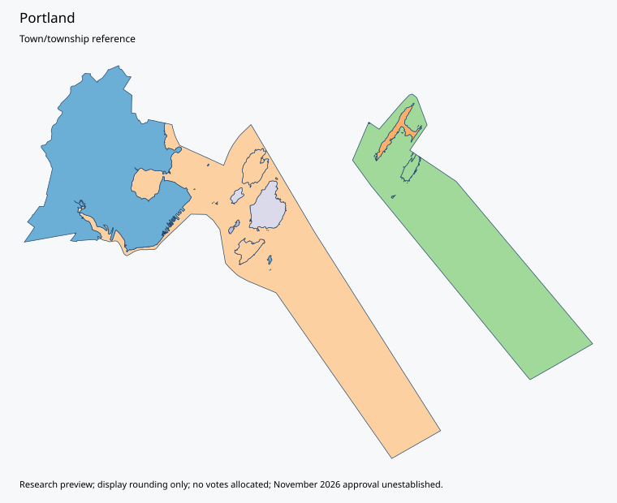
Full-vertex GeoJSON (.gz) · SVG preview
Municipal/township scope. Source features: 127; geocodes: 05170. Decompress .gz before opening in GIS.portland-map original PDF (all page previews)
2020 Census VTD name candidates · historical preview. Historical fallback only; no results crosswalk.
Current SOS roster W/P labels: 1-1, 1-2, 1-3, 1-45, 2-1, 2-2, 3-1, 3-2, 4-1, 4-2, 5-1, 5-2. Labels are not polygon IDs. Read-only current roster.2. Lewiston
ME:SOS:2024-11-05:AND:LewistonParent county context: 23001municipal/township polygon reference; lexical identity candidate
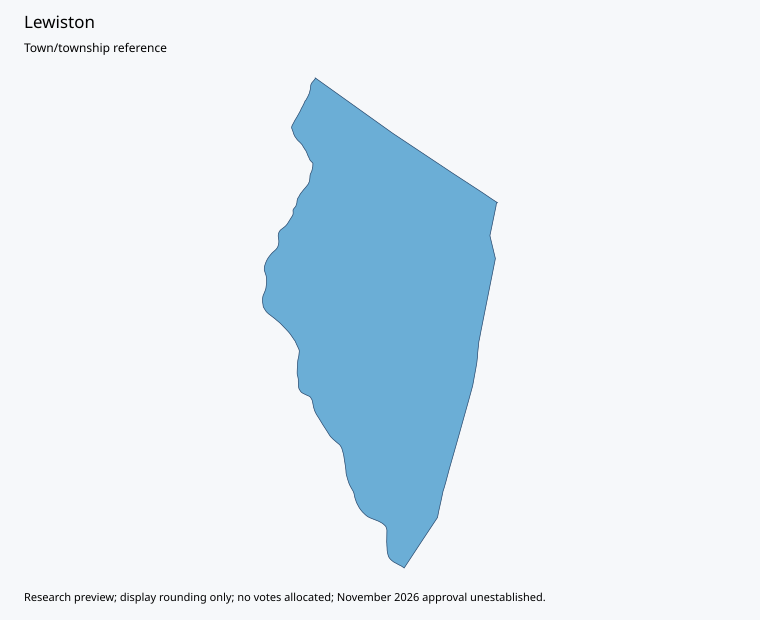
Full-vertex GeoJSON (.gz) · SVG preview
Municipal/township scope. Source features: 1; geocodes: 01050. Decompress .gz before opening in GIS.lewiston-ward-map original PDF (all page previews)
lewiston-ordinance original PDF (all page previews)
2020 Census VTD name candidates · historical preview. Historical fallback only; no results crosswalk.
Current SOS roster W/P labels: 1-1, 2-1, 3-1, 4-1, 5-1, 6-1, 7-1. Labels are not polygon IDs. Read-only current roster.3. Bangor
ME:SOS:2024-11-05:PEN:BangorParent county context: 23019municipal/township polygon reference; lexical identity candidate
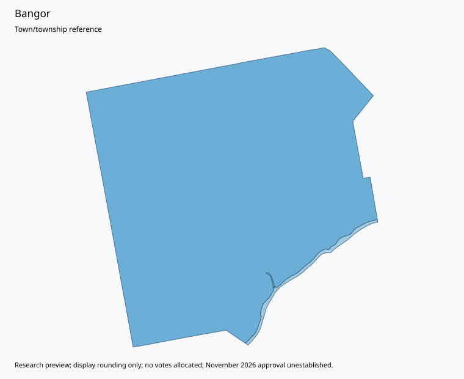
Full-vertex GeoJSON (.gz) · SVG preview
Municipal/township scope. Source features: 3; geocodes: 19020. Decompress .gz before opening in GIS.Current SOS roster W/P labels: 1-1. Labels are not polygon IDs. Read-only current roster.4. South Portland
ME:SOS:2024-11-05:CUM:South%20PortlandParent county context: 23005municipal/township polygon reference; lexical identity candidate
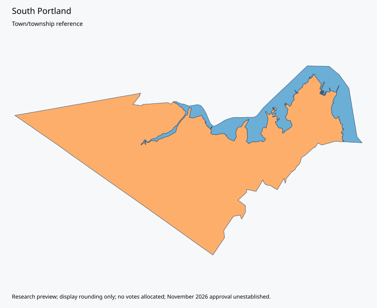
Full-vertex GeoJSON (.gz) · SVG preview
Municipal/township scope. Source features: 5; geocodes: 05220. Decompress .gz before opening in GIS.south-portland-2014-map original PDF (all page previews)
south-portland-map original PDF (all page previews)
2020 Census VTD name candidates · historical preview. Historical fallback only; no results crosswalk.
Current SOS roster W/P labels: 1-1, 2-1, 3-1, 4-1, 5-1. Labels are not polygon IDs. Read-only current roster.5. Scarborough
ME:SOS:2024-11-05:CUM:ScarboroughParent county context: 23005municipal/township polygon reference; lexical identity candidate
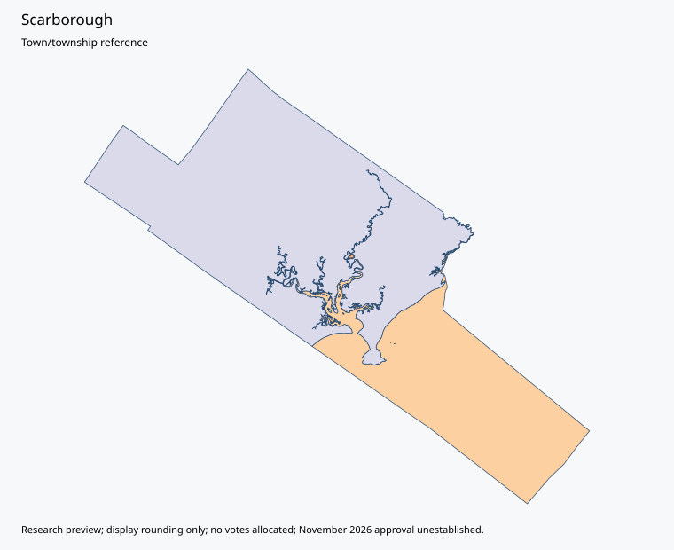
Full-vertex GeoJSON (.gz) · SVG preview
Municipal/township scope. Source features: 83; geocodes: 05200. Decompress .gz before opening in GIS.2020 Census VTD name candidates · historical preview. Historical fallback only; no results crosswalk.
Current SOS roster W/P labels: 1-1. Labels are not polygon IDs. Read-only current roster.6. Brunswick
ME:SOS:2024-11-05:CUM:BrunswickParent county context: 23005municipal/township polygon reference; lexical identity candidate
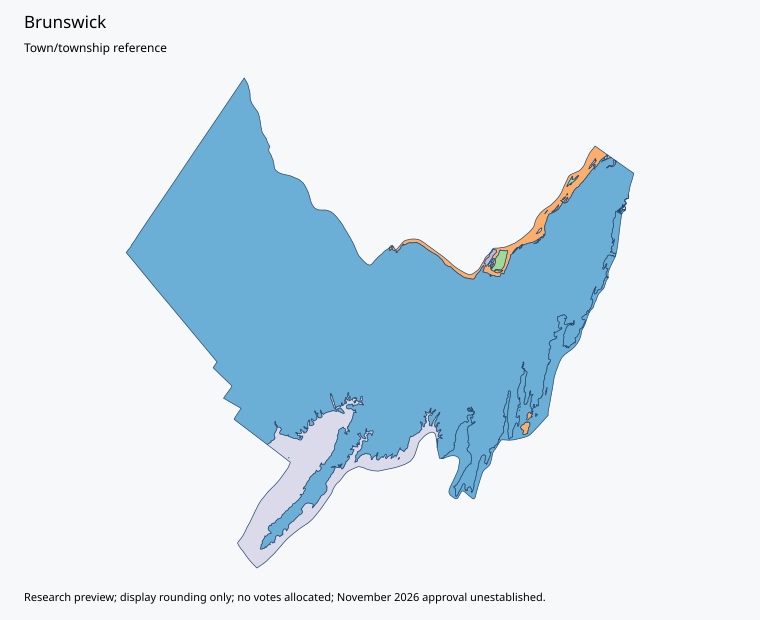
Full-vertex GeoJSON (.gz) · SVG preview
Municipal/township scope. Source features: 62; geocodes: 05030. Decompress .gz before opening in GIS.brunswick-map original PDF (all page previews)
2020 Census VTD name candidates · historical preview. Historical fallback only; no results crosswalk.
Current SOS roster W/P labels: 1-1. Labels are not polygon IDs. Read-only current roster.7. Saco
ME:SOS:2024-11-05:YOR:SacoParent county context: 23031municipal/township polygon reference; lexical identity candidate
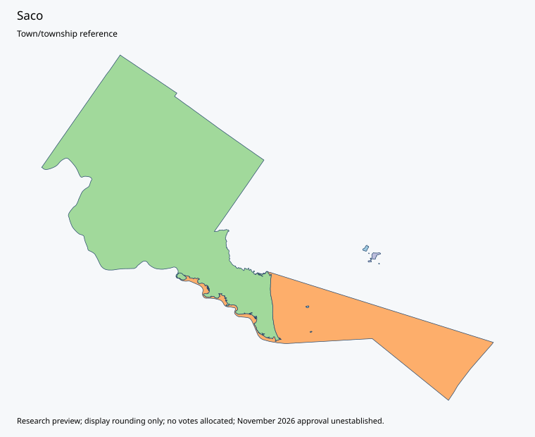
Full-vertex GeoJSON (.gz) · SVG preview
Municipal/township scope. Source features: 19; geocodes: 31220. Decompress .gz before opening in GIS.saco-map original PDF (all page previews)
2020 Census VTD name candidates · historical preview. Historical fallback only; no results crosswalk.
Current SOS roster W/P labels: 1-1. Labels are not polygon IDs. Read-only current roster.8. Auburn
ME:SOS:2024-11-05:AND:AuburnParent county context: 23001municipal/township polygon reference; lexical identity candidate
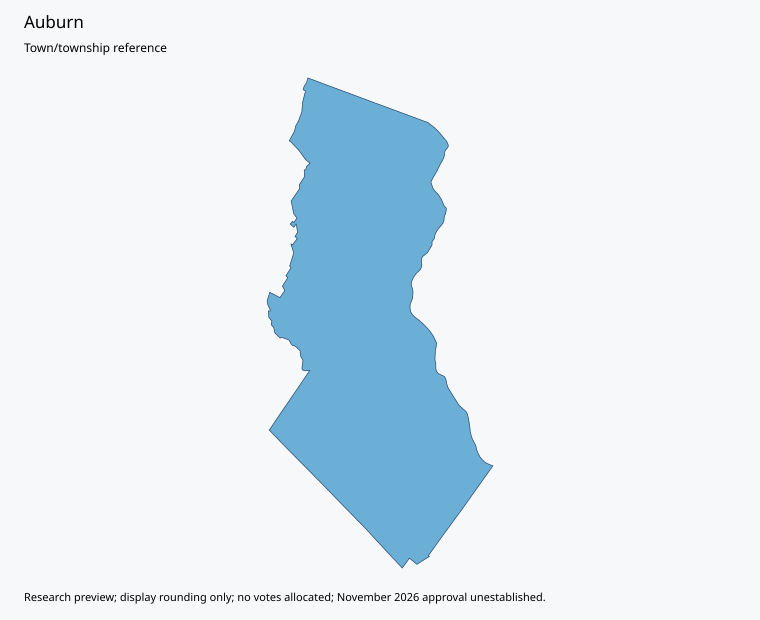
Full-vertex GeoJSON (.gz) · SVG preview
Municipal/township scope. Source features: 1; geocodes: 01010. Decompress .gz before opening in GIS.auburn-current-map original PDF (all page previews)
2020 Census VTD name candidates · historical preview. Historical fallback only; no results crosswalk.
Current SOS roster W/P labels: 1-1, 2-1, 3-1, 4-1, 5-1. Labels are not polygon IDs. Read-only current roster.9. Windham
ME:SOS:2024-11-05:CUM:WindhamParent county context: 23005municipal/township polygon reference; lexical identity candidate
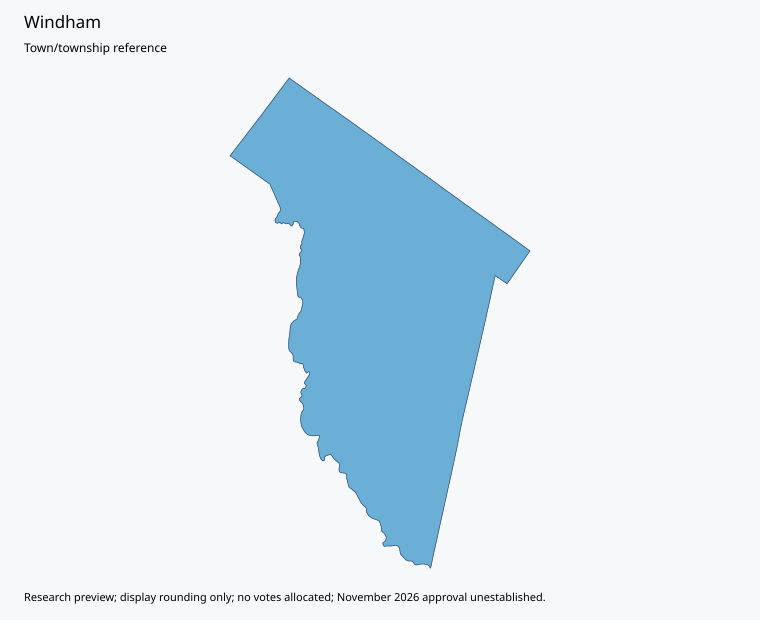
Full-vertex GeoJSON (.gz) · SVG preview
Municipal/township scope. Source features: 1; geocodes: 05250. Decompress .gz before opening in GIS.windham-map original PDF (all page previews)
2020 Census VTD name candidates · historical preview. Historical fallback only; no results crosswalk.
Current SOS roster W/P labels: 1-1. Labels are not polygon IDs. Read-only current roster.10. Biddeford
ME:SOS:2024-11-05:YOR:BiddefordParent county context: 23031municipal/township polygon reference; lexical identity candidate
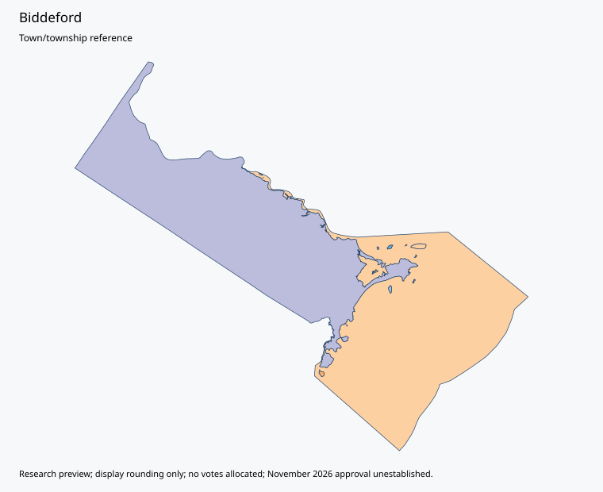
Full-vertex GeoJSON (.gz) · SVG preview
Municipal/township scope. Source features: 28; geocodes: 31050. Decompress .gz before opening in GIS.biddeford-map original PDF (all page previews)
2020 Census VTD name candidates · historical preview. Historical fallback only; no results crosswalk.
Current SOS roster W/P labels: 1-1. Labels are not polygon IDs. Read-only current roster.11. Gorham
ME:SOS:2024-11-05:CUM:GorhamParent county context: 23005municipal/township polygon reference; lexical identity candidate
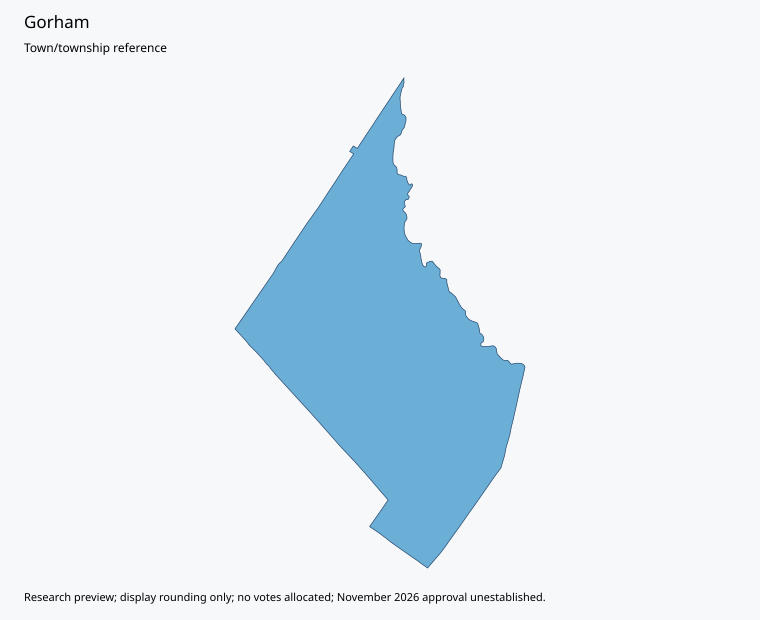
Full-vertex GeoJSON (.gz) · SVG preview
Municipal/township scope. Source features: 1; geocodes: 05090. Decompress .gz before opening in GIS.Finer ward/precinct geometry is unresolved. Inspected primary-source routes and gaps; municipal whole-return reference is available above. Any legislative PDF reference is a separate scope.
2020 Census VTD name candidates · historical preview. Historical fallback only; no results crosswalk.
Current SOS roster W/P labels: 1-1, 1-2, 2-1. Labels are not polygon IDs. Read-only current roster.12. Sanford
ME:SOS:2024-11-05:YOR:SanfordParent county context: 23031municipal/township polygon reference; lexical identity candidate
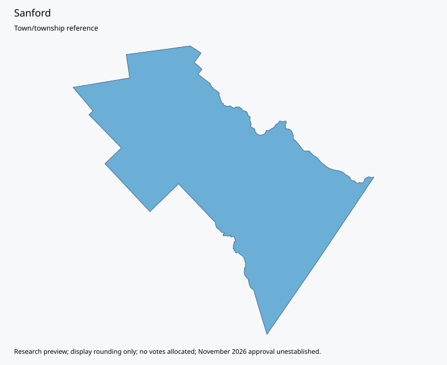
Full-vertex GeoJSON (.gz) · SVG preview
Municipal/township scope. Source features: 1; geocodes: 31230. Decompress .gz before opening in GIS.2020 Census VTD name candidates · historical preview. Historical fallback only; no results crosswalk.
Current SOS roster W/P labels: 1-1. Labels are not polygon IDs. Read-only current roster.13. Westbrook
ME:SOS:2024-11-05:CUM:WestbrookParent county context: 23005municipal/township polygon reference; lexical identity candidate
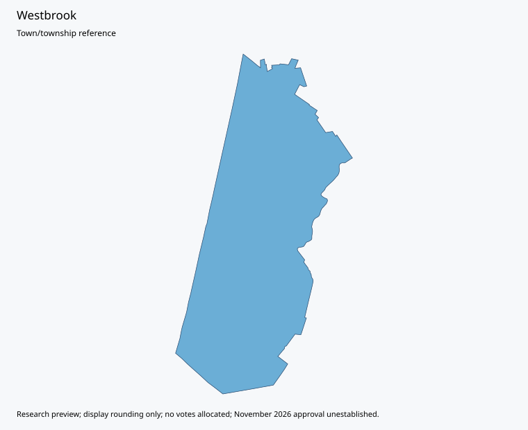
Full-vertex GeoJSON (.gz) · SVG preview
Municipal/township scope. Source features: 1; geocodes: 05240. Decompress .gz before opening in GIS.westbrook-map original PDF (all page previews)
2020 Census VTD name candidates · historical preview. Historical fallback only; no results crosswalk.
Current SOS roster W/P labels: 1-1. Labels are not polygon IDs. Read-only current roster.14. Augusta
ME:SOS:2024-11-05:KEN:AugustaParent county context: 23011municipal/township polygon reference; lexical identity candidate
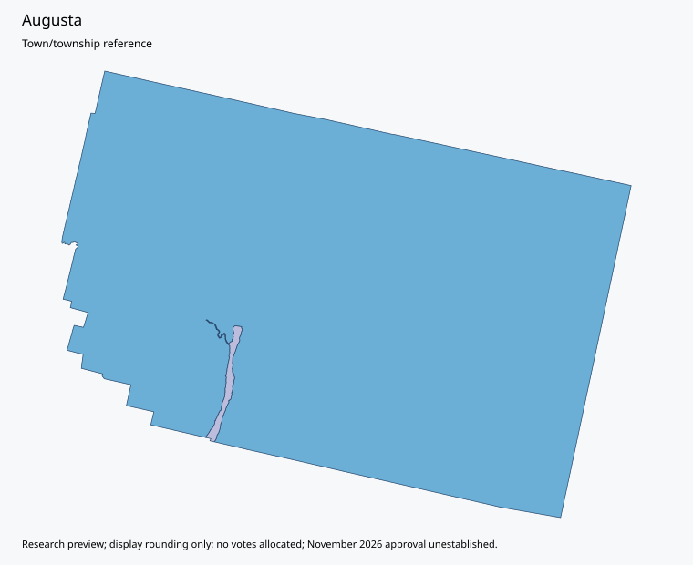
Full-vertex GeoJSON (.gz) · SVG preview
Municipal/township scope. Source features: 4; geocodes: 11020. Decompress .gz before opening in GIS.augusta-map original PDF (all page previews)
2020 Census VTD name candidates · historical preview. Historical fallback only; no results crosswalk.
Current SOS roster W/P labels: 1-1, 2-1, 3-1, 4-1. Labels are not polygon IDs. Read-only current roster.15. York
ME:SOS:2024-11-05:YOR:YorkParent county context: 23031municipal/township polygon reference; lexical identity candidate
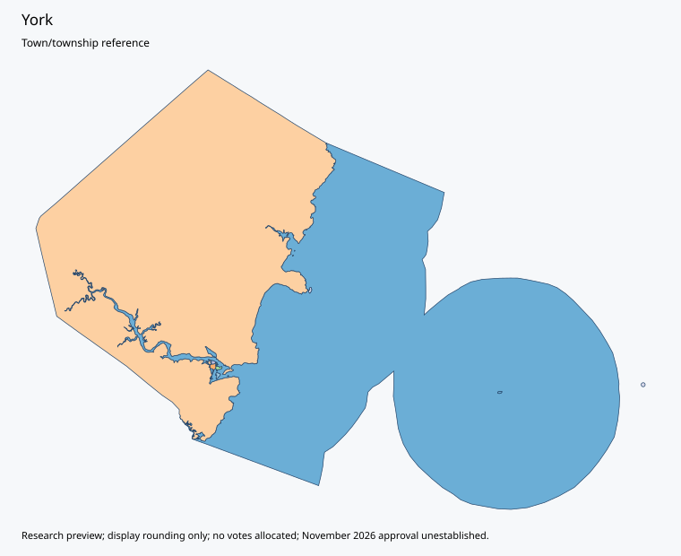
Full-vertex GeoJSON (.gz) · SVG preview
Municipal/township scope. Source features: 21; geocodes: 31280. Decompress .gz before opening in GIS.2020 Census VTD name candidates · historical preview. Historical fallback only; no results crosswalk.
Current SOS roster W/P labels: 1-1. Labels are not polygon IDs. Read-only current roster.16. Falmouth
ME:SOS:2024-11-05:CUM:FalmouthParent county context: 23005municipal/township polygon reference; lexical identity candidate
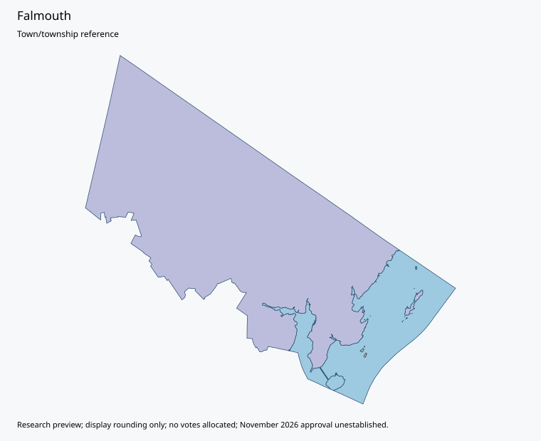
Full-vertex GeoJSON (.gz) · SVG preview
Municipal/township scope. Source features: 31; geocodes: 05070. Decompress .gz before opening in GIS.2020 Census VTD name candidates · historical preview. Historical fallback only; no results crosswalk.
Current SOS roster W/P labels: 1-1. Labels are not polygon IDs. Read-only current roster.17. Wells
ME:SOS:2024-11-05:YOR:WellsParent county context: 23031municipal/township polygon reference; lexical identity candidate
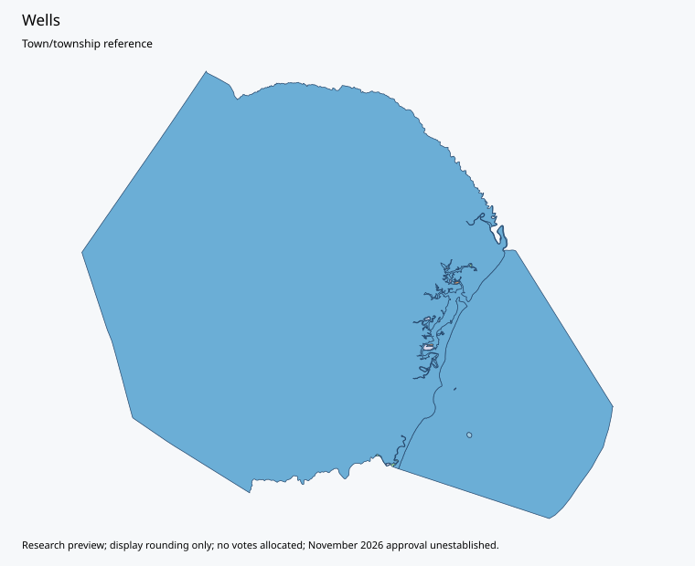
Full-vertex GeoJSON (.gz) · SVG preview
Municipal/township scope. Source features: 29; geocodes: 31270. Decompress .gz before opening in GIS.2020 Census VTD name candidates · historical preview. Historical fallback only; no results crosswalk.
Current SOS roster W/P labels: 1-1. Labels are not polygon IDs. Read-only current roster.18. Kennebunk
ME:SOS:2024-11-05:YOR:KennebunkParent county context: 23031municipal/township polygon reference; lexical identity candidate
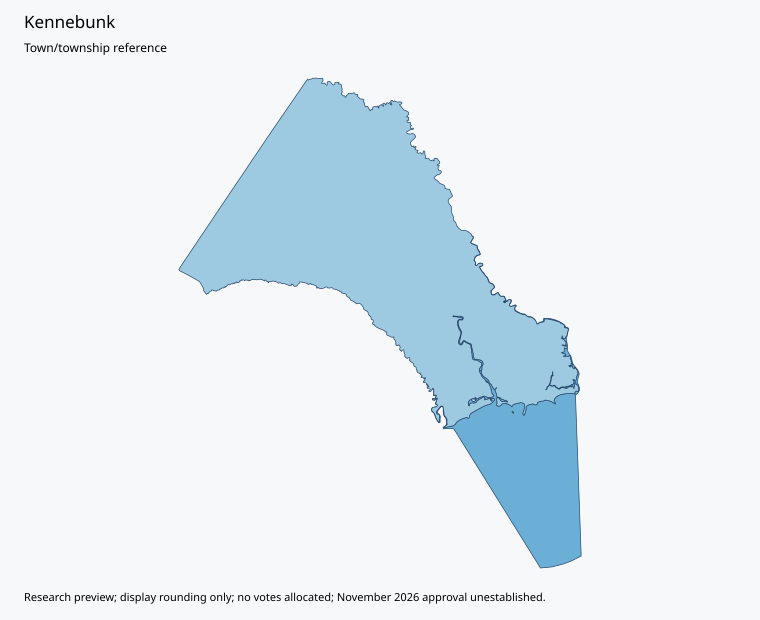
Full-vertex GeoJSON (.gz) · SVG preview
Municipal/township scope. Source features: 9; geocodes: 31110. Decompress .gz before opening in GIS.Finer ward/precinct geometry is unresolved. Inspected primary-source routes and gaps; municipal whole-return reference is available above. Any legislative PDF reference is a separate scope.
2020 Census VTD name candidates · historical preview. Historical fallback only; no results crosswalk.
Current SOS roster W/P labels: 1-1, 1-2. Labels are not polygon IDs. Read-only current roster.19. Waterville
ME:SOS:2024-11-05:KEN:WatervilleParent county context: 23011municipal/township polygon reference; lexical identity candidate
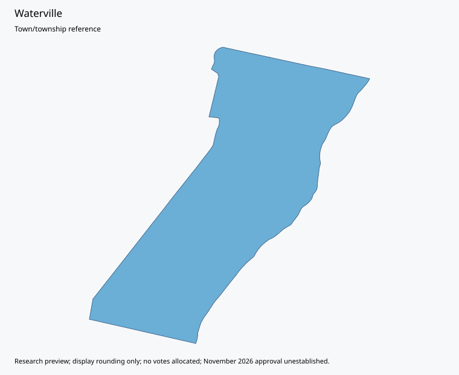
Full-vertex GeoJSON (.gz) · SVG preview
Municipal/township scope. Source features: 1; geocodes: 11240. Decompress .gz before opening in GIS.waterville-map original PDF (all page previews)
2020 Census VTD name candidates · historical preview. Historical fallback only; no results crosswalk.
Current SOS roster W/P labels: 1-1. Labels are not polygon IDs. Read-only current roster.20. Cape Elizabeth
ME:SOS:2024-11-05:CUM:Cape%20ElizabethParent county context: 23005municipal/township polygon reference; lexical identity candidate
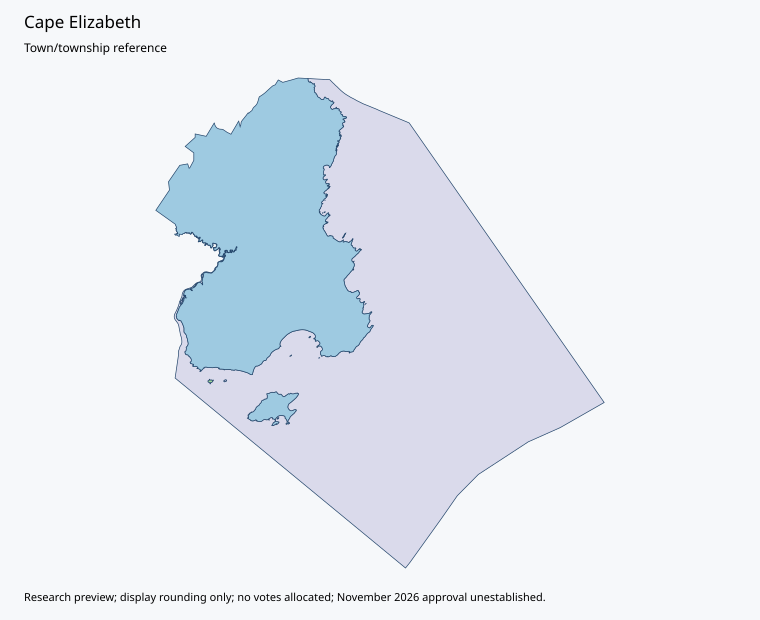
Full-vertex GeoJSON (.gz) · SVG preview
Municipal/township scope. Source features: 30; geocodes: 05040. Decompress .gz before opening in GIS.2020 Census VTD name candidates · historical preview. Historical fallback only; no results crosswalk.
Current SOS roster W/P labels: 1-1. Labels are not polygon IDs. Read-only current roster.21. Topsham
ME:SOS:2024-11-05:SAG:TopshamParent county context: 23023municipal/township polygon reference; lexical identity candidate
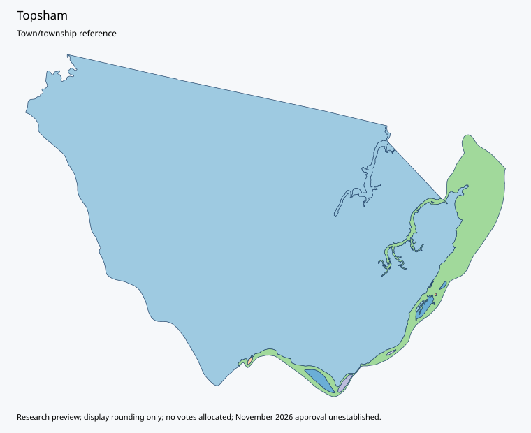
Full-vertex GeoJSON (.gz) · SVG preview
Municipal/township scope. Source features: 31; geocodes: 23080. Decompress .gz before opening in GIS.2020 Census VTD name candidates · historical preview. Historical fallback only; no results crosswalk.
Current SOS roster W/P labels: 1-1. Labels are not polygon IDs. Read-only current roster.22. STATE UOCAVA
ME:SOS:2024-11-05:STATE:STATE%20UOCAVAParent county context: noneadministrative, no polygon appropriate
Administrative, no polygon appropriate. No county assignment; missing geometry is not missing votes. Maine SOS state administration (retained successful primary request).
23. Kittery
ME:SOS:2024-11-05:YOR:KitteryParent county context: 23031municipal/township polygon reference; lexical identity candidate
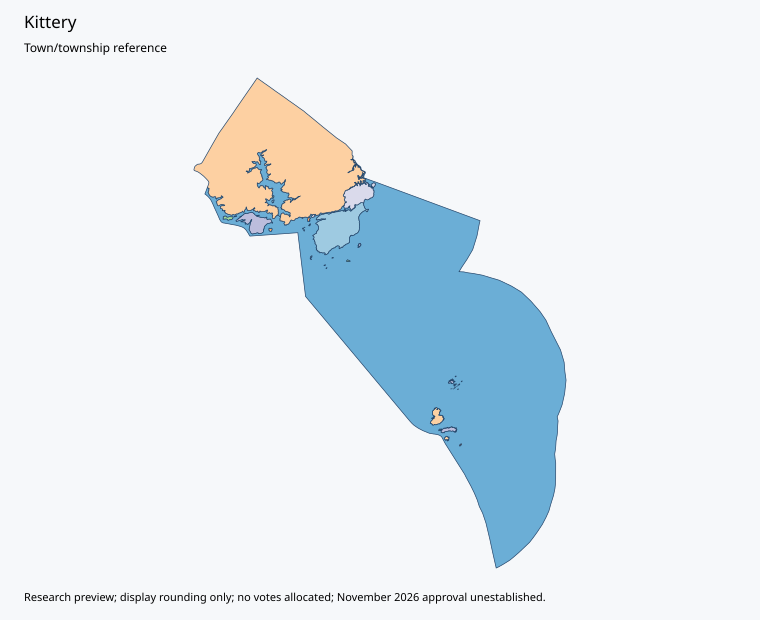
Full-vertex GeoJSON (.gz) · SVG preview
Municipal/township scope. Source features: 63; geocodes: 31130. Decompress .gz before opening in GIS.2020 Census VTD name candidates · historical preview. Historical fallback only; no results crosswalk.
Current SOS roster W/P labels: 1-1. Labels are not polygon IDs. Read-only current roster.24. Standish
ME:SOS:2024-11-05:CUM:StandishParent county context: 23005municipal/township polygon reference; lexical identity candidate
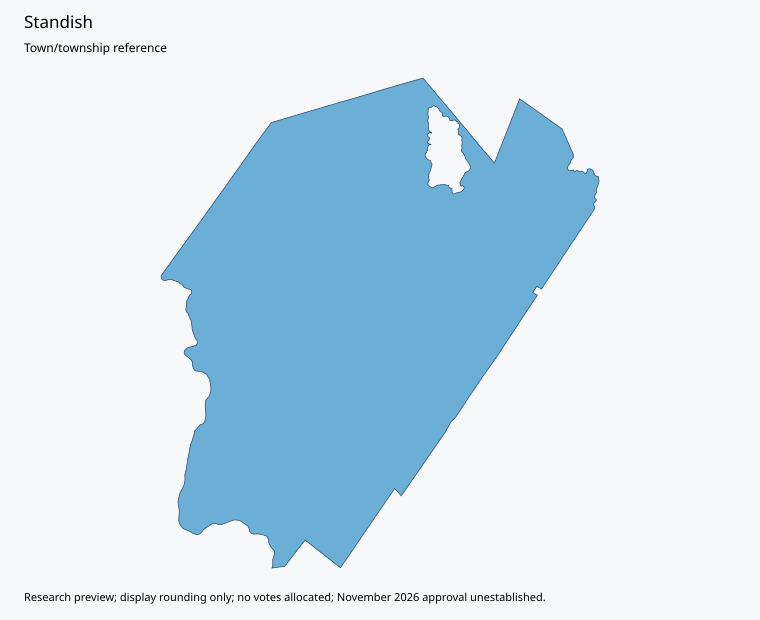
Full-vertex GeoJSON (.gz) · SVG preview
Municipal/township scope. Source features: 1; geocodes: 05230. Decompress .gz before opening in GIS.2020 Census VTD name candidates · historical preview. Historical fallback only; no results crosswalk.
Current SOS roster W/P labels: 1-1. Labels are not polygon IDs. Read-only current roster.25. Yarmouth
ME:SOS:2024-11-05:CUM:YarmouthParent county context: 23005municipal/township polygon reference; lexical identity candidate
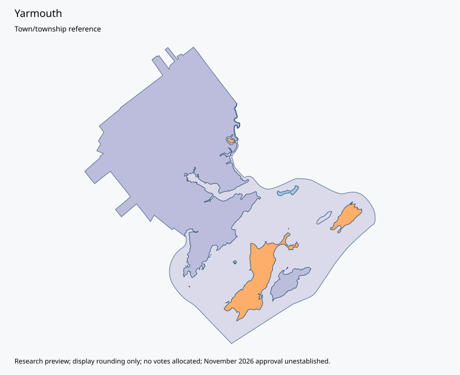
Full-vertex GeoJSON (.gz) · SVG preview
Municipal/township scope. Source features: 27; geocodes: 05260. Decompress .gz before opening in GIS.2020 Census VTD name candidates · historical preview. Historical fallback only; no results crosswalk.
Current SOS roster W/P labels: 1-1. Labels are not polygon IDs. Read-only current roster.26. Freeport
ME:SOS:2024-11-05:CUM:FreeportParent county context: 23005municipal/township polygon reference; lexical identity candidate
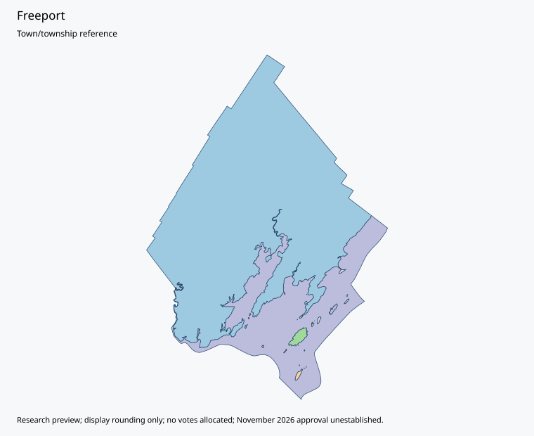
Full-vertex GeoJSON (.gz) · SVG preview
Municipal/township scope. Source features: 47; geocodes: 05080. Decompress .gz before opening in GIS.freeport-map original PDF (all page previews)
2020 Census VTD name candidates · historical preview. Historical fallback only; no results crosswalk.
Current SOS roster W/P labels: 1-1. Labels are not polygon IDs. Read-only current roster.27. Old Orchard Beach
ME:SOS:2024-11-05:YOR:Old%20Orchard%20BeachParent county context: 23031municipal/township polygon reference; lexical identity candidate
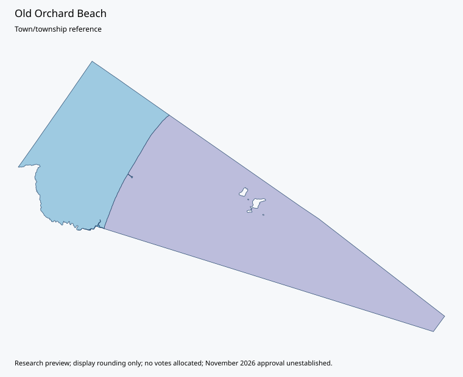
Full-vertex GeoJSON (.gz) · SVG preview
Municipal/township scope. Source features: 3; geocodes: 31200. Decompress .gz before opening in GIS.2020 Census VTD name candidates · historical preview. Historical fallback only; no results crosswalk.
Current SOS roster W/P labels: 1-1. Labels are not polygon IDs. Read-only current roster.28. Cumberland
ME:SOS:2024-11-05:CUM:CumberlandParent county context: 23005municipal/township polygon reference; lexical identity candidate
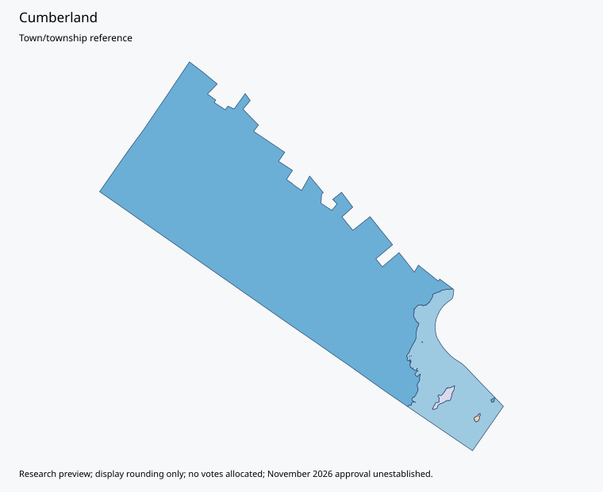
Full-vertex GeoJSON (.gz) · SVG preview
Municipal/township scope. Source features: 16; geocodes: 05060. Decompress .gz before opening in GIS.2020 Census VTD name candidates · historical preview. Historical fallback only; no results crosswalk.
Current SOS roster W/P labels: 1-1. Labels are not polygon IDs. Read-only current roster.29. Gray
ME:SOS:2024-11-05:CUM:GrayParent county context: 23005municipal/township polygon reference; lexical identity candidate
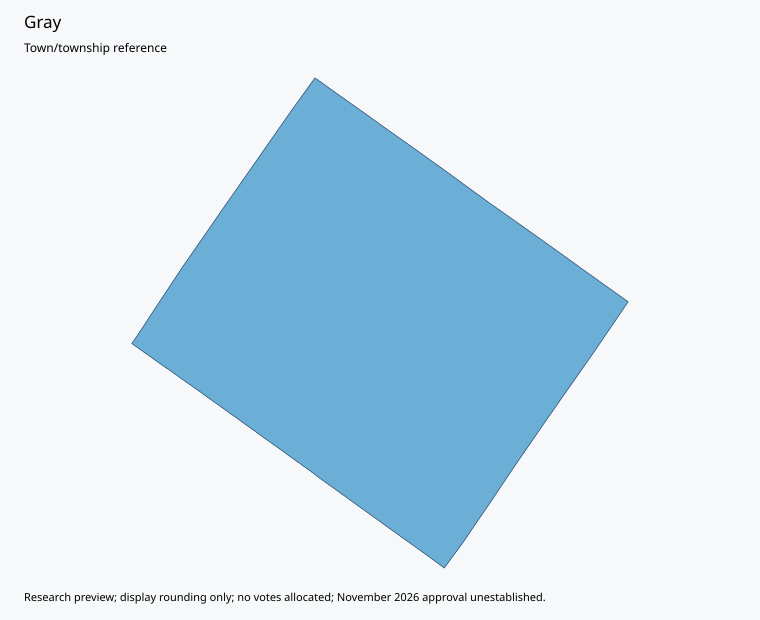
Full-vertex GeoJSON (.gz) · SVG preview
Municipal/township scope. Source features: 1; geocodes: 05100. Decompress .gz before opening in GIS.2020 Census VTD name candidates · historical preview. Historical fallback only; no results crosswalk.
Current SOS roster W/P labels: 1-1. Labels are not polygon IDs. Read-only current roster.30. Orono
ME:SOS:2024-11-05:PEN:OronoParent county context: 23019municipal/township polygon reference; lexical identity candidate
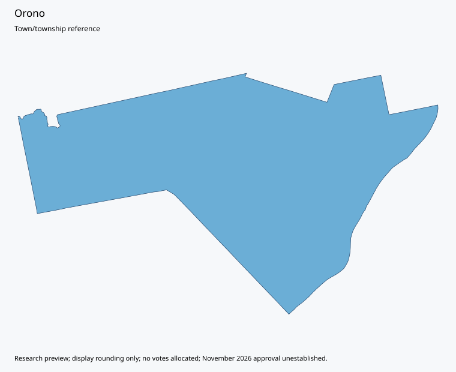
Full-vertex GeoJSON (.gz) · SVG preview
Municipal/township scope. Source features: 1; geocodes: 19490. Decompress .gz before opening in GIS.Orono precinct GIS derivative · precinct preview (source label2021; approval/crosswalk unestablished)
Current SOS roster W/P labels: 1-1. Labels are not polygon IDs. Read-only current roster.31. Buxton
ME:SOS:2024-11-05:YOR:BuxtonParent county context: 23031municipal/township polygon reference; lexical identity candidate
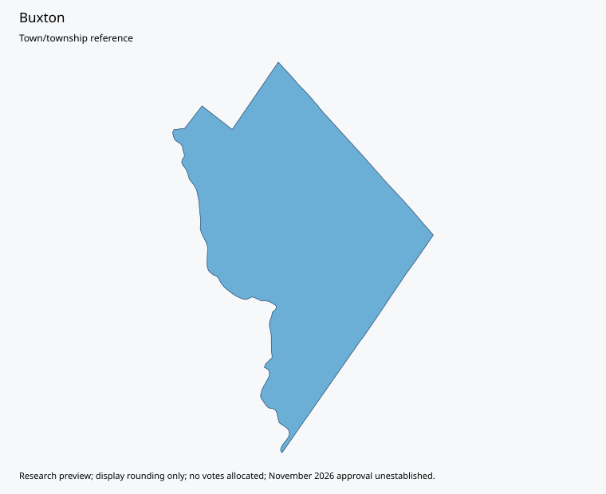
Full-vertex GeoJSON (.gz) · SVG preview
Municipal/township scope. Source features: 1; geocodes: 31060. Decompress .gz before opening in GIS.2020 Census VTD name candidates · historical preview. Historical fallback only; no results crosswalk.
Current SOS roster W/P labels: 1-1. Labels are not polygon IDs. Read-only current roster.32. Brewer
ME:SOS:2024-11-05:PEN:BrewerParent county context: 23019municipal/township polygon reference; lexical identity candidate
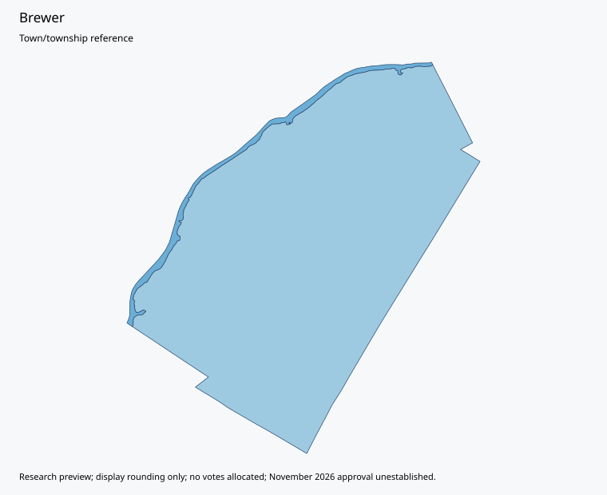
Full-vertex GeoJSON (.gz) · SVG preview
Municipal/township scope. Source features: 3; geocodes: 19050. Decompress .gz before opening in GIS.Current SOS roster W/P labels: 1-1. Labels are not polygon IDs. Read-only current roster.33. Bath
ME:SOS:2024-11-05:SAG:BathParent county context: 23023municipal/township polygon reference; lexical identity candidate
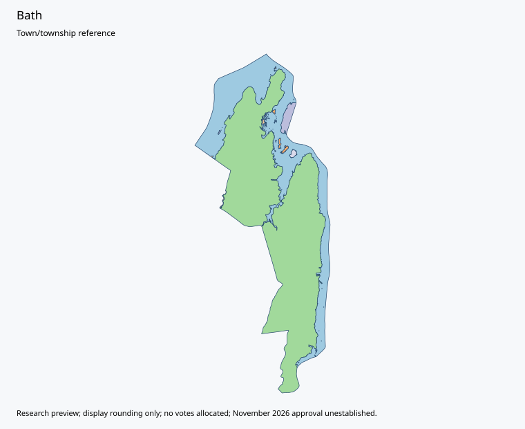
Full-vertex GeoJSON (.gz) · SVG preview
Municipal/township scope. Source features: 114; geocodes: 23020. Decompress .gz before opening in GIS.bath-map original PDF (all page previews)
2020 Census VTD name candidates · historical preview. Historical fallback only; no results crosswalk.
Current SOS roster W/P labels: 1-1. Labels are not polygon IDs. Read-only current roster.34. Lisbon
ME:SOS:2024-11-05:AND:LisbonParent county context: 23001municipal/township polygon reference; lexical identity candidate
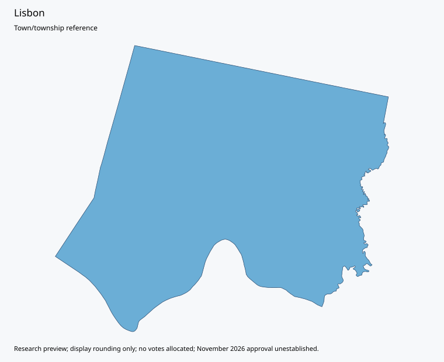
Full-vertex GeoJSON (.gz) · SVG preview
Municipal/township scope. Source features: 1; geocodes: 01060. Decompress .gz before opening in GIS.lisbon-reference original PDF (all page previews)
Finer ward/precinct geometry is unresolved. Inspected primary-source routes and gaps; municipal whole-return reference is available above. Any legislative PDF reference is a separate scope.
2020 Census VTD name candidates · historical preview. Historical fallback only; no results crosswalk.
Current SOS roster W/P labels: 1-1, 1-2. Labels are not polygon IDs. Read-only current roster.35. Hampden
ME:SOS:2024-11-05:PEN:HampdenParent county context: 23019municipal/township polygon reference; lexical identity candidate
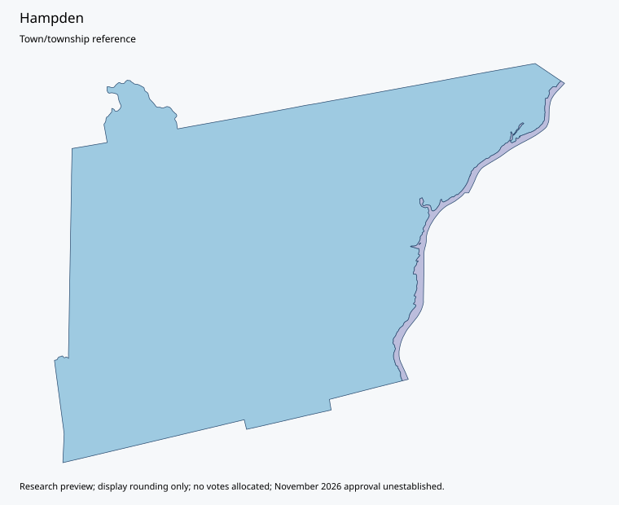
Full-vertex GeoJSON (.gz) · SVG preview
Municipal/township scope. Source features: 3; geocodes: 19280. Decompress .gz before opening in GIS.hampden-map original PDF (all page previews)
Current SOS roster W/P labels: 1-1. Labels are not polygon IDs. Read-only current roster.36. Ellsworth/Fletchers Landing Twp
ME:SOS:2024-11-05:HAN:Ellsworth%2FFletchers%20Landing%20TwpParent county context: 23009combined component reference; historical whole-return crosswalk unverified
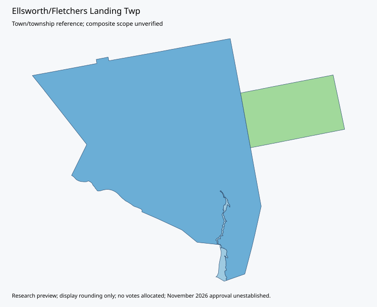
Full-vertex GeoJSON (.gz) · SVG preview
Municipal/township scope. Source features: 4; geocodes: 09130, 09804. Decompress .gz before opening in GIS.Component names: Ellsworth; Fletchers Landing Twp. Whole-return relationship unverified; no votes split.Finer ward/precinct geometry is unresolved. Inspected primary-source routes and gaps; municipal whole-return reference is available above. Any legislative PDF reference is a separate scope.
Current SOS roster W/P labels: 1-1, 2-1, 3-1, 4-1. Labels are not polygon IDs. Read-only current roster.37. Waterboro
ME:SOS:2024-11-05:YOR:WaterboroParent county context: 23031municipal/township polygon reference; lexical identity candidate
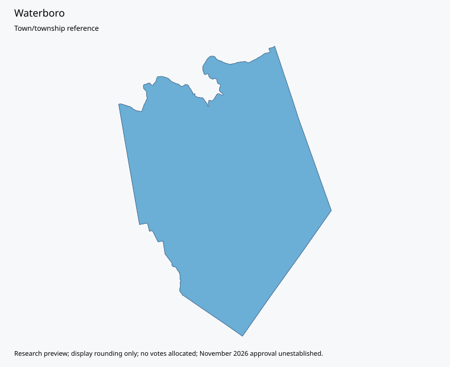
Full-vertex GeoJSON (.gz) · SVG preview
Municipal/township scope. Source features: 1; geocodes: 31260. Decompress .gz before opening in GIS.Finer ward/precinct geometry is unresolved. Inspected primary-source routes and gaps; municipal whole-return reference is available above. Any legislative PDF reference is a separate scope.
2020 Census VTD name candidates · historical preview. Historical fallback only; no results crosswalk.
Current SOS roster W/P labels: 1-1. Labels are not polygon IDs. Read-only current roster.38. South Berwick
ME:SOS:2024-11-05:YOR:South%20BerwickParent county context: 23031municipal/township polygon reference; lexical identity candidate
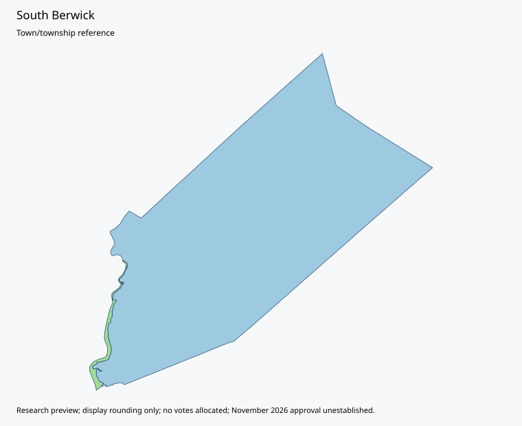
Full-vertex GeoJSON (.gz) · SVG preview
Municipal/township scope. Source features: 6; geocodes: 31250. Decompress .gz before opening in GIS.2020 Census VTD name candidates · historical preview. Historical fallback only; no results crosswalk.
Current SOS roster W/P labels: 1-1. Labels are not polygon IDs. Read-only current roster.39. Winslow
ME:SOS:2024-11-05:KEN:WinslowParent county context: 23011municipal/township polygon reference; lexical identity candidate
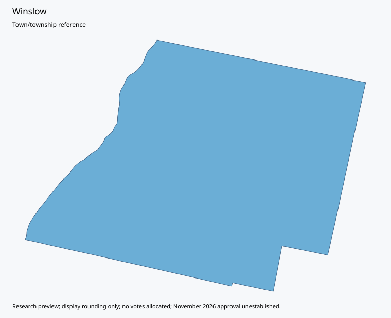
Full-vertex GeoJSON (.gz) · SVG preview
Municipal/township scope. Source features: 1; geocodes: 11280. Decompress .gz before opening in GIS.winslow-map original PDF (all page previews)
2020 Census VTD name candidates · historical preview. Historical fallback only; no results crosswalk.
Current SOS roster W/P labels: 1-1. Labels are not polygon IDs. Read-only current roster.40. Eliot
ME:SOS:2024-11-05:YOR:EliotParent county context: 23031municipal/township polygon reference; lexical identity candidate
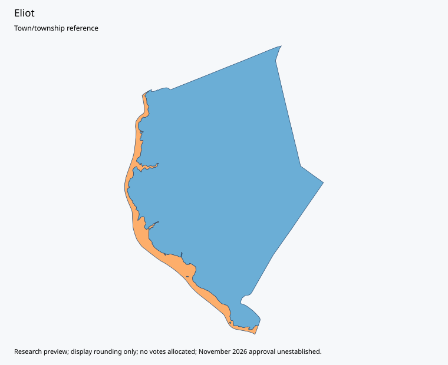
Full-vertex GeoJSON (.gz) · SVG preview
Municipal/township scope. Source features: 5; geocodes: 31090. Decompress .gz before opening in GIS.2020 Census VTD name candidates · historical preview. Historical fallback only; no results crosswalk.
Current SOS roster W/P labels: 1-1. Labels are not polygon IDs. Read-only current roster.41. Berwick
ME:SOS:2024-11-05:YOR:BerwickParent county context: 23031municipal/township polygon reference; lexical identity candidate
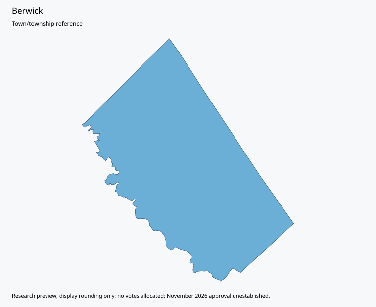
Full-vertex GeoJSON (.gz) · SVG preview
Municipal/township scope. Source features: 1; geocodes: 31040. Decompress .gz before opening in GIS.2020 Census VTD name candidates · historical preview. Historical fallback only; no results crosswalk.
Current SOS roster W/P labels: 1-1. Labels are not polygon IDs. Read-only current roster.42. Belfast
ME:SOS:2024-11-05:WAL:BelfastParent county context: 23027municipal/township polygon reference; lexical identity candidate
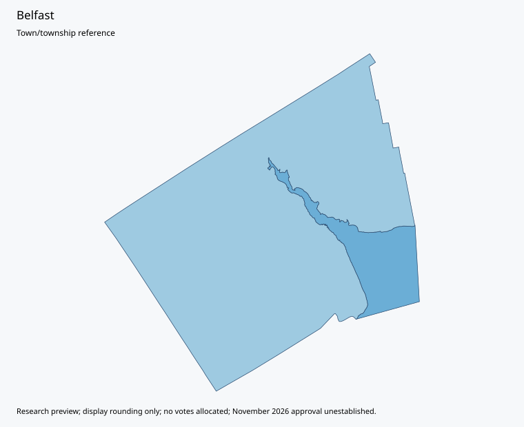
Full-vertex GeoJSON (.gz) · SVG preview
Municipal/township scope. Source features: 2; geocodes: 27010. Decompress .gz before opening in GIS.belfast-map original PDF (all page previews)
2020 Census VTD name candidates · historical preview. Historical fallback only; no results crosswalk.
Current SOS roster W/P labels: 1-1, 2-1, 3-1, 4-1, 5-1. Labels are not polygon IDs. Read-only current roster.43. Presque Isle
ME:SOS:2024-11-05:ARO:Presque%20IsleParent county context: 23003municipal/township polygon reference; lexical identity candidate
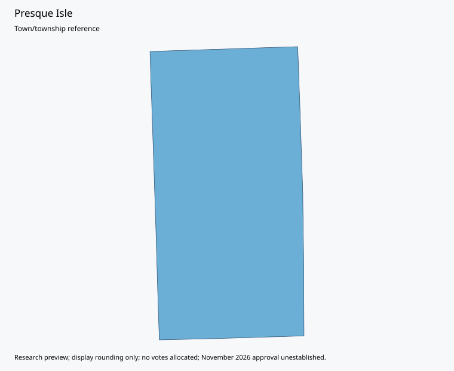
Full-vertex GeoJSON (.gz) · SVG preview
Municipal/township scope. Source features: 1; geocodes: 03530. Decompress .gz before opening in GIS.Finer ward/precinct geometry is unresolved. Inspected primary-source routes and gaps; municipal whole-return reference is available above. Any legislative PDF reference is a separate scope.
Current SOS roster W/P labels: 1-1. Labels are not polygon IDs. Read-only current roster.44. Hermon
ME:SOS:2024-11-05:PEN:HermonParent county context: 23019municipal/township polygon reference; lexical identity candidate
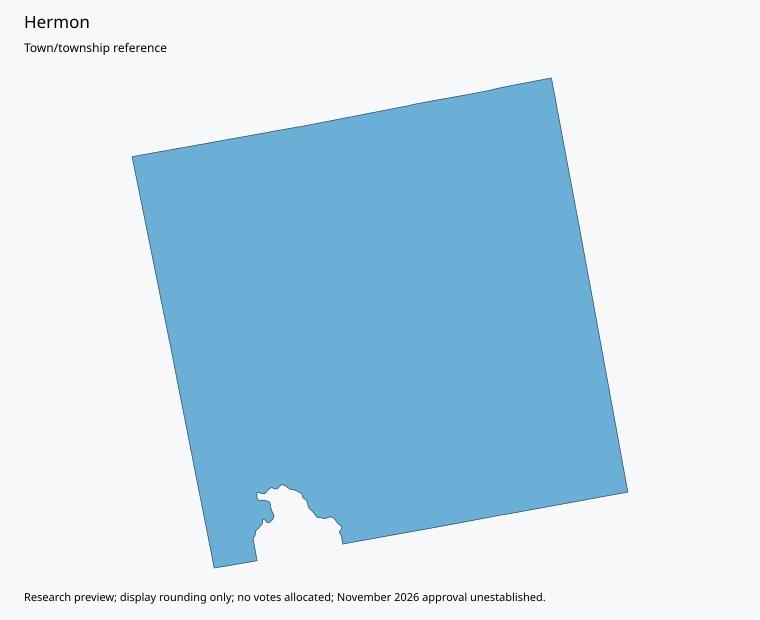
Full-vertex GeoJSON (.gz) · SVG preview
Municipal/township scope. Source features: 1; geocodes: 19290. Decompress .gz before opening in GIS.Current SOS roster W/P labels: 1-1. Labels are not polygon IDs. Read-only current roster.45. Old Town/Argyle Twp
ME:SOS:2024-11-05:PEN:Old%20Town%2FArgyle%20TwpParent county context: 23019combined component reference; historical whole-return crosswalk unverified
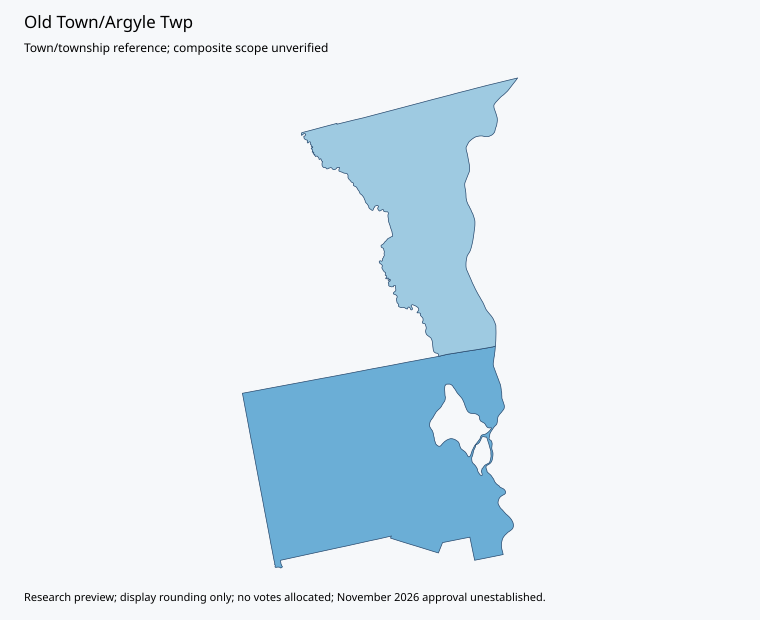
Full-vertex GeoJSON (.gz) · SVG preview
Municipal/township scope. Source features: 2; geocodes: 19480, 19801. Decompress .gz before opening in GIS.Component names: Argyle Twp; Old Town. Whole-return relationship unverified; no votes split.Current SOS roster W/P labels: 5-1. Labels are not polygon IDs. Read-only current roster.46. Caribou/Connor
ME:SOS:2024-11-05:ARO:Caribou%2FConnorParent county context: 23003combined component reference; historical whole-return crosswalk unverified
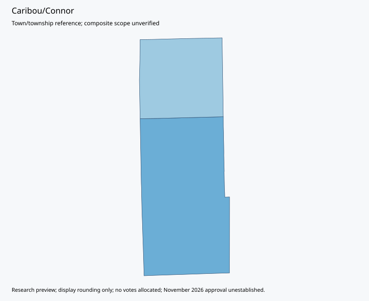
Full-vertex GeoJSON (.gz) · SVG preview
Municipal/township scope. Source features: 2; geocodes: 03080, 03802. Decompress .gz before opening in GIS.Component names: Caribou; Connor Twp. Whole-return relationship unverified; no votes split.Current SOS roster W/P labels: 1-1. Labels are not polygon IDs. Read-only current roster.47. Farmington
ME:SOS:2024-11-05:FRA:FarmingtonParent county context: 23007municipal/township polygon reference; lexical identity candidate
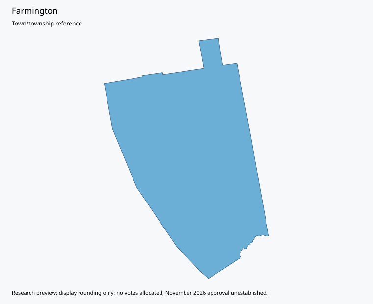
Full-vertex GeoJSON (.gz) · SVG preview
Municipal/township scope. Source features: 1; geocodes: 07070. Decompress .gz before opening in GIS.Current SOS roster W/P labels: 1-1. Labels are not polygon IDs. Read-only current roster.48. Winthrop
ME:SOS:2024-11-05:KEN:WinthropParent county context: 23011municipal/township polygon reference; lexical identity candidate
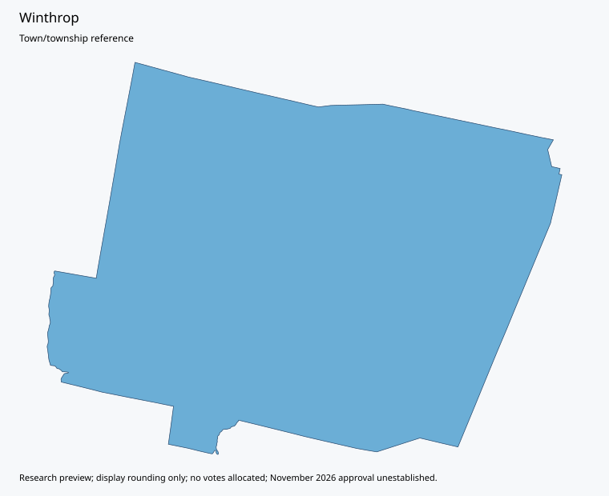
Full-vertex GeoJSON (.gz) · SVG preview
Municipal/township scope. Source features: 1; geocodes: 11290. Decompress .gz before opening in GIS.2020 Census VTD name candidates · historical preview. Historical fallback only; no results crosswalk.
Current SOS roster W/P labels: 1-1. Labels are not polygon IDs. Read-only current roster.49. Harpswell
ME:SOS:2024-11-05:CUM:HarpswellParent county context: 23005municipal/township polygon reference; lexical identity candidate
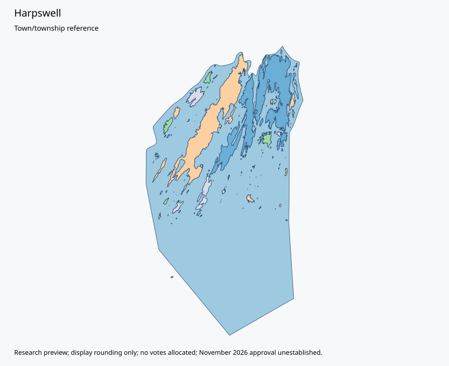
Full-vertex GeoJSON (.gz) · SVG preview
Municipal/township scope. Source features: 331; geocodes: 05110. Decompress .gz before opening in GIS.Finer ward/precinct geometry is unresolved. Inspected primary-source routes and gaps; municipal whole-return reference is available above. Any legislative PDF reference is a separate scope.
2020 Census VTD name candidates · historical preview. Historical fallback only; no results crosswalk.
Current SOS roster W/P labels: 1-1. Labels are not polygon IDs. Read-only current roster.50. Rockland
ME:SOS:2024-11-05:KNO:RocklandParent county context: 23013municipal/township polygon reference; lexical identity candidate
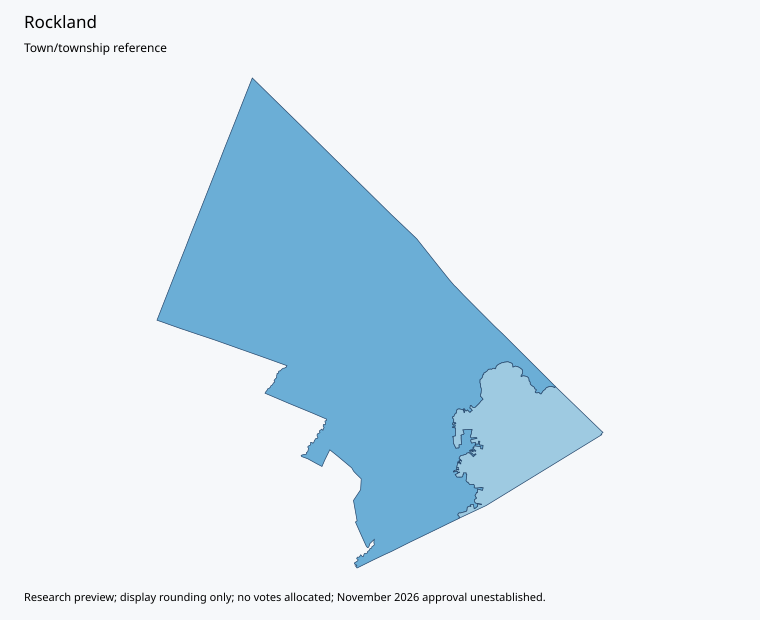
Full-vertex GeoJSON (.gz) · SVG preview
Municipal/township scope. Source features: 2; geocodes: 13100. Decompress .gz before opening in GIS.Current SOS roster W/P labels: 1-1. Labels are not polygon IDs. Read-only current roster.51. New Gloucester
ME:SOS:2024-11-05:CUM:New%20GloucesterParent county context: 23005municipal/township polygon reference; lexical identity candidate
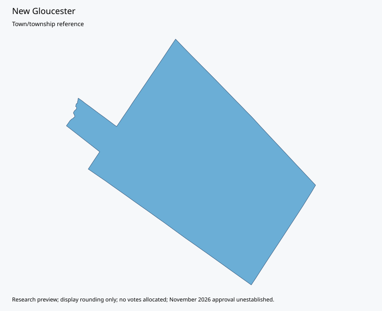
Full-vertex GeoJSON (.gz) · SVG preview
Municipal/township scope. Source features: 1; geocodes: 05140. Decompress .gz before opening in GIS.2020 Census VTD name candidates · historical preview. Historical fallback only; no results crosswalk.
Current SOS roster W/P labels: 1-1. Labels are not polygon IDs. Read-only current roster.52. Oakland
ME:SOS:2024-11-05:KEN:OaklandParent county context: 23011municipal/township polygon reference; lexical identity candidate
Full-vertex GeoJSON (.gz) · SVG preview
Municipal/township scope. Source features: 1; geocodes: 11160. Decompress .gz before opening in GIS.2020 Census VTD name candidates · historical preview. Historical fallback only; no results crosswalk.
Current SOS roster W/P labels: 1-1. Labels are not polygon IDs. Read-only current roster.53. Skowhegan
ME:SOS:2024-11-05:SOM:SkowheganParent county context: 23025municipal/township polygon reference; lexical identity candidate
Full-vertex GeoJSON (.gz) · SVG preview
Municipal/township scope. Source features: 1; geocodes: 25280. Decompress .gz before opening in GIS.Current SOS roster W/P labels: 1-1. Labels are not polygon IDs. Read-only current roster.54. Turner
ME:SOS:2024-11-05:AND:TurnerParent county context: 23001municipal/township polygon reference; lexical identity candidate
Full-vertex GeoJSON (.gz) · SVG preview
Municipal/township scope. Source features: 1; geocodes: 01120. Decompress .gz before opening in GIS.2020 Census VTD name candidates · historical preview. Historical fallback only; no results crosswalk.
Current SOS roster W/P labels: 1-1. Labels are not polygon IDs. Read-only current roster.55. Camden
ME:SOS:2024-11-05:KNO:CamdenParent county context: 23013municipal/township polygon reference; lexical identity candidate
Full-vertex GeoJSON (.gz) · SVG preview
Municipal/township scope. Source features: 11; geocodes: 13020. Decompress .gz before opening in GIS.Current SOS roster W/P labels: 1-1. Labels are not polygon IDs. Read-only current roster.56. Bar Harbor
ME:SOS:2024-11-05:HAN:Bar%20HarborParent county context: 23009municipal/township polygon reference; lexical identity candidate
Full-vertex GeoJSON (.gz) · SVG preview
Municipal/township scope. Source features: 27; geocodes: 09030. Decompress .gz before opening in GIS.Current SOS roster W/P labels: 1-1. Labels are not polygon IDs. Read-only current roster.57. Poland
ME:SOS:2024-11-05:AND:PolandParent county context: 23001municipal/township polygon reference; lexical identity candidate
Full-vertex GeoJSON (.gz) · SVG preview
Municipal/township scope. Source features: 1; geocodes: 01110. Decompress .gz before opening in GIS.2020 Census VTD name candidates · historical preview. Historical fallback only; no results crosswalk.
Current SOS roster W/P labels: 1-1. Labels are not polygon IDs. Read-only current roster.58. Bridgton
ME:SOS:2024-11-05:CUM:BridgtonParent county context: 23005municipal/township polygon reference; lexical identity candidate
Full-vertex GeoJSON (.gz) · SVG preview
Municipal/township scope. Source features: 1; geocodes: 05020. Decompress .gz before opening in GIS.2020 Census VTD name candidates · historical preview. Historical fallback only; no results crosswalk.
Current SOS roster W/P labels: 1-1. Labels are not polygon IDs. Read-only current roster.59. Lebanon
ME:SOS:2024-11-05:YOR:LebanonParent county context: 23031municipal/township polygon reference; lexical identity candidate
Full-vertex GeoJSON (.gz) · SVG preview
Municipal/township scope. Source features: 1; geocodes: 31140. Decompress .gz before opening in GIS.2020 Census VTD name candidates · historical preview. Historical fallback only; no results crosswalk.
Current SOS roster W/P labels: 1-1. Labels are not polygon IDs. Read-only current roster.60. Fairfield
ME:SOS:2024-11-05:SOM:FairfieldParent county context: 23025municipal/township polygon reference; lexical identity candidate
Full-vertex GeoJSON (.gz) · SVG preview
Municipal/township scope. Source features: 1; geocodes: 25120. Decompress .gz before opening in GIS.Current SOS roster W/P labels: 1-1. Labels are not polygon IDs. Read-only current roster.61. North Berwick
ME:SOS:2024-11-05:YOR:North%20BerwickParent county context: 23031municipal/township polygon reference; lexical identity candidate
Full-vertex GeoJSON (.gz) · SVG preview
Municipal/township scope. Source features: 1; geocodes: 31190. Decompress .gz before opening in GIS.2020 Census VTD name candidates · historical preview. Historical fallback only; no results crosswalk.
Current SOS roster W/P labels: 1-1. Labels are not polygon IDs. Read-only current roster.62. Raymond
ME:SOS:2024-11-05:CUM:RaymondParent county context: 23005municipal/township polygon reference; lexical identity candidate
Full-vertex GeoJSON (.gz) · SVG preview
Municipal/township scope. Source features: 1; geocodes: 05190. Decompress .gz before opening in GIS.2020 Census VTD name candidates · historical preview. Historical fallback only; no results crosswalk.
Current SOS roster W/P labels: 1-1. Labels are not polygon IDs. Read-only current roster.63. Sidney
ME:SOS:2024-11-05:KEN:SidneyParent county context: 23011municipal/township polygon reference; lexical identity candidate
Full-vertex GeoJSON (.gz) · SVG preview
Municipal/township scope. Source features: 1; geocodes: 11210. Decompress .gz before opening in GIS.2020 Census VTD name candidates · historical preview. Historical fallback only; no results crosswalk.
Current SOS roster W/P labels: 1-1. Labels are not polygon IDs. Read-only current roster.64. North Yarmouth
ME:SOS:2024-11-05:CUM:North%20YarmouthParent county context: 23005municipal/township polygon reference; lexical identity candidate
Full-vertex GeoJSON (.gz) · SVG preview
Municipal/township scope. Source features: 1; geocodes: 05150. Decompress .gz before opening in GIS.2020 Census VTD name candidates · historical preview. Historical fallback only; no results crosswalk.
Current SOS roster W/P labels: 1-1. Labels are not polygon IDs. Read-only current roster.65. Gardiner
ME:SOS:2024-11-05:KEN:GardinerParent county context: 23011municipal/township polygon reference; lexical identity candidate
Full-vertex GeoJSON (.gz) · SVG preview
Municipal/township scope. Source features: 3; geocodes: 11100. Decompress .gz before opening in GIS.Finer ward/precinct geometry is unresolved. Inspected primary-source routes and gaps; municipal whole-return reference is available above. Any legislative PDF reference is a separate scope.
2020 Census VTD name candidates · historical preview. Historical fallback only; no results crosswalk.
Current SOS roster W/P labels: 1-1. Labels are not polygon IDs. Read-only current roster.66. Hollis
ME:SOS:2024-11-05:YOR:HollisParent county context: 23031municipal/township polygon reference; lexical identity candidate
Full-vertex GeoJSON (.gz) · SVG preview
Municipal/township scope. Source features: 1; geocodes: 31100. Decompress .gz before opening in GIS.2020 Census VTD name candidates · historical preview. Historical fallback only; no results crosswalk.
Current SOS roster W/P labels: 1-1. Labels are not polygon IDs. Read-only current roster.67. Lyman
ME:SOS:2024-11-05:YOR:LymanParent county context: 23031municipal/township polygon reference; lexical identity candidate
Full-vertex GeoJSON (.gz) · SVG preview
Municipal/township scope. Source features: 1; geocodes: 31170. Decompress .gz before opening in GIS.2020 Census VTD name candidates · historical preview. Historical fallback only; no results crosswalk.
Current SOS roster W/P labels: 1-1. Labels are not polygon IDs. Read-only current roster.68. Norway
ME:SOS:2024-11-05:OXF:NorwayParent county context: 23017municipal/township polygon reference; lexical identity candidate
Full-vertex GeoJSON (.gz) · SVG preview
Municipal/township scope. Source features: 1; geocodes: 17210. Decompress .gz before opening in GIS.Current SOS roster W/P labels: 1-1. Labels are not polygon IDs. Read-only current roster.69. Sabattus
ME:SOS:2024-11-05:AND:SabattusParent county context: 23001municipal/township polygon reference; lexical identity candidate
Full-vertex GeoJSON (.gz) · SVG preview
Municipal/township scope. Source features: 1; geocodes: 01140. Decompress .gz before opening in GIS.2020 Census VTD name candidates · historical preview. Historical fallback only; no results crosswalk.
Current SOS roster W/P labels: 1-1. Labels are not polygon IDs. Read-only current roster.70. Durham
ME:SOS:2024-11-05:AND:DurhamParent county context: 23001municipal/township polygon reference; lexical identity candidate
Full-vertex GeoJSON (.gz) · SVG preview
Municipal/township scope. Source features: 1; geocodes: 01020. Decompress .gz before opening in GIS.2020 Census VTD name candidates · historical preview. Historical fallback only; no results crosswalk.
Current SOS roster W/P labels: 1-1. Labels are not polygon IDs. Read-only current roster.71. Paris
ME:SOS:2024-11-05:OXF:ParisParent county context: 23017municipal/township polygon reference; lexical identity candidate
Full-vertex GeoJSON (.gz) · SVG preview
Municipal/township scope. Source features: 1; geocodes: 17230. Decompress .gz before opening in GIS.Current SOS roster W/P labels: 1-1. Labels are not polygon IDs. Read-only current roster.72. Bucksport
ME:SOS:2024-11-05:HAN:BucksportParent county context: 23009municipal/township polygon reference; lexical identity candidate
Full-vertex GeoJSON (.gz) · SVG preview
Municipal/township scope. Source features: 3; geocodes: 09070. Decompress .gz before opening in GIS.Current SOS roster W/P labels: 1-1. Labels are not polygon IDs. Read-only current roster.73. Glenburn
ME:SOS:2024-11-05:PEN:GlenburnParent county context: 23019municipal/township polygon reference; lexical identity candidate
Full-vertex GeoJSON (.gz) · SVG preview
Municipal/township scope. Source features: 1; geocodes: 19240. Decompress .gz before opening in GIS.Current SOS roster W/P labels: 1-1. Labels are not polygon IDs. Read-only current roster.74. Arundel
ME:SOS:2024-11-05:YOR:ArundelParent county context: 23031municipal/township polygon reference; lexical identity candidate
Full-vertex GeoJSON (.gz) · SVG preview
Municipal/township scope. Source features: 5; geocodes: 31030. Decompress .gz before opening in GIS.2020 Census VTD name candidates · historical preview. Historical fallback only; no results crosswalk.
Current SOS roster W/P labels: 1-1. Labels are not polygon IDs. Read-only current roster.75. Kennebunkport
ME:SOS:2024-11-05:YOR:KennebunkportParent county context: 23031municipal/township polygon reference; lexical identity candidate
Full-vertex GeoJSON (.gz) · SVG preview
Municipal/township scope. Source features: 49; geocodes: 31120. Decompress .gz before opening in GIS.2020 Census VTD name candidates · historical preview. Historical fallback only; no results crosswalk.
Current SOS roster W/P labels: 1-1. Labels are not polygon IDs. Read-only current roster.76. Lincoln
ME:SOS:2024-11-05:PEN:LincolnParent county context: 23019municipal/township polygon reference; lexical identity candidate
Full-vertex GeoJSON (.gz) · SVG preview
Municipal/township scope. Source features: 1; geocodes: 19380. Decompress .gz before opening in GIS.Current SOS roster W/P labels: 1-1. Labels are not polygon IDs. Read-only current roster.77. Rumford
ME:SOS:2024-11-05:OXF:RumfordParent county context: 23017municipal/township polygon reference; lexical identity candidate
Full-vertex GeoJSON (.gz) · SVG preview
Municipal/township scope. Source features: 1; geocodes: 17270. Decompress .gz before opening in GIS.Current SOS roster W/P labels: 1-1. Labels are not polygon IDs. Read-only current roster.78. Vassalboro
ME:SOS:2024-11-05:KEN:VassalboroParent county context: 23011municipal/township polygon reference; lexical identity candidate
Full-vertex GeoJSON (.gz) · SVG preview
Municipal/township scope. Source features: 1; geocodes: 11220. Decompress .gz before opening in GIS.2020 Census VTD name candidates · historical preview. Historical fallback only; no results crosswalk.
Current SOS roster W/P labels: 1-1. Labels are not polygon IDs. Read-only current roster.79. Greene
ME:SOS:2024-11-05:AND:GreeneParent county context: 23001municipal/township polygon reference; lexical identity candidate
Full-vertex GeoJSON (.gz) · SVG preview
Municipal/township scope. Source features: 1; geocodes: 01030. Decompress .gz before opening in GIS.2020 Census VTD name candidates · historical preview. Historical fallback only; no results crosswalk.
Current SOS roster W/P labels: 1-1. Labels are not polygon IDs. Read-only current roster.80. Jay
ME:SOS:2024-11-05:FRA:JayParent county context: 23007municipal/township polygon reference; lexical identity candidate
Full-vertex GeoJSON (.gz) · SVG preview
Municipal/township scope. Source features: 1; geocodes: 07090. Decompress .gz before opening in GIS.Current SOS roster W/P labels: 1-1. Labels are not polygon IDs. Read-only current roster.81. Houlton
ME:SOS:2024-11-05:ARO:HoultonParent county context: 23003municipal/township polygon reference; lexical identity candidate
Full-vertex GeoJSON (.gz) · SVG preview
Municipal/township scope. Source features: 1; geocodes: 03300. Decompress .gz before opening in GIS.Current SOS roster W/P labels: 1-1. Labels are not polygon IDs. Read-only current roster.82. Millinocket/Twps
ME:SOS:2024-11-05:PEN:Millinocket%2FTwpsParent county context: 23019combined component reference; historical whole-return crosswalk unverified
Full-vertex GeoJSON (.gz) · SVG preview
Municipal/township scope. Source features: 13; geocodes: 19440, 19806, 19807, 19809, 19816, 21804, 21833, 21842, 21847, 21860, 21862, 21875. Decompress .gz before opening in GIS.Historical /Twps membership unestablished; displayed expanded components are current 2026 roster references only
Component names: Chesuncook Twp; Long A Twp; Millinocket; T1 R8 WELS; T1 R9 WELS; T3 Indian Purchase Twp; T3 R11 WELS; T4 Indian Purchase Twp; T4 R10 WELS; T6 R11 WELS; T6 R13 WELS; T8 R11 WELS. Whole-return relationship unverified; no votes split.Current SOS roster W/P labels: 1-1. Labels are not polygon IDs. Read-only current roster.83. Orrington
ME:SOS:2024-11-05:PEN:OrringtonParent county context: 23019municipal/township polygon reference; lexical identity candidate
Full-vertex GeoJSON (.gz) · SVG preview
Municipal/township scope. Source features: 2; geocodes: 19500. Decompress .gz before opening in GIS.Current SOS roster W/P labels: 1-1. Labels are not polygon IDs. Read-only current roster.84. China
ME:SOS:2024-11-05:KEN:ChinaParent county context: 23011municipal/township polygon reference; lexical identity candidate
Full-vertex GeoJSON (.gz) · SVG preview
Municipal/township scope. Source features: 1; geocodes: 11060. Decompress .gz before opening in GIS.2020 Census VTD name candidates · historical preview. Historical fallback only; no results crosswalk.
Current SOS roster W/P labels: 1-1. Labels are not polygon IDs. Read-only current roster.85. Monmouth
ME:SOS:2024-11-05:KEN:MonmouthParent county context: 23011municipal/township polygon reference; lexical identity candidate
Full-vertex GeoJSON (.gz) · SVG preview
Municipal/township scope. Source features: 1; geocodes: 11140. Decompress .gz before opening in GIS.2020 Census VTD name candidates · historical preview. Historical fallback only; no results crosswalk.
Current SOS roster W/P labels: 1-1. Labels are not polygon IDs. Read-only current roster.86. Naples
ME:SOS:2024-11-05:CUM:NaplesParent county context: 23005municipal/township polygon reference; lexical identity candidate
Full-vertex GeoJSON (.gz) · SVG preview
Municipal/township scope. Source features: 1; geocodes: 05130. Decompress .gz before opening in GIS.2020 Census VTD name candidates · historical preview. Historical fallback only; no results crosswalk.
Current SOS roster W/P labels: 1-1. Labels are not polygon IDs. Read-only current roster.87. Rockport
ME:SOS:2024-11-05:KNO:RockportParent county context: 23013municipal/township polygon reference; lexical identity candidate
Full-vertex GeoJSON (.gz) · SVG preview
Municipal/township scope. Source features: 25; geocodes: 13110. Decompress .gz before opening in GIS.Current SOS roster W/P labels: 1-1. Labels are not polygon IDs. Read-only current roster.88. West Gardiner
ME:SOS:2024-11-05:KEN:West%20GardinerParent county context: 23011municipal/township polygon reference; lexical identity candidate
Full-vertex GeoJSON (.gz) · SVG preview
Municipal/township scope. Source features: 1; geocodes: 11260. Decompress .gz before opening in GIS.2020 Census VTD name candidates · historical preview. Historical fallback only; no results crosswalk.
Current SOS roster W/P labels: 1-1. Labels are not polygon IDs. Read-only current roster.89. Oxford
ME:SOS:2024-11-05:OXF:OxfordParent county context: 23017municipal/township polygon reference; lexical identity candidate
Full-vertex GeoJSON (.gz) · SVG preview
Municipal/township scope. Source features: 1; geocodes: 17220. Decompress .gz before opening in GIS.Current SOS roster W/P labels: 1-1. Labels are not polygon IDs. Read-only current roster.90. Limington
ME:SOS:2024-11-05:YOR:LimingtonParent county context: 23031municipal/township polygon reference; lexical identity candidate
Full-vertex GeoJSON (.gz) · SVG preview
Municipal/township scope. Source features: 1; geocodes: 31160. Decompress .gz before opening in GIS.2020 Census VTD name candidates · historical preview. Historical fallback only; no results crosswalk.
Current SOS roster W/P labels: 1-1. Labels are not polygon IDs. Read-only current roster.91. Madison
ME:SOS:2024-11-05:SOM:MadisonParent county context: 23025municipal/township polygon reference; lexical identity candidate
Full-vertex GeoJSON (.gz) · SVG preview
Municipal/township scope. Source features: 1; geocodes: 25170. Decompress .gz before opening in GIS.Current SOS roster W/P labels: 1-1. Labels are not polygon IDs. Read-only current roster.92. Dover-Foxcroft
ME:SOS:2024-11-05:PIS:Dover-FoxcroftParent county context: 23021municipal/township polygon reference; lexical identity candidate
Full-vertex GeoJSON (.gz) · SVG preview
Municipal/township scope. Source features: 1; geocodes: 21070. Decompress .gz before opening in GIS.Current SOS roster W/P labels: 1-1. Labels are not polygon IDs. Read-only current roster.93. Warren
ME:SOS:2024-11-05:KNO:WarrenParent county context: 23013municipal/township polygon reference; lexical identity candidate
Full-vertex GeoJSON (.gz) · SVG preview
Municipal/township scope. Source features: 2; geocodes: 13170. Decompress .gz before opening in GIS.Current SOS roster W/P labels: 1-1. Labels are not polygon IDs. Read-only current roster.94. Winterport
ME:SOS:2024-11-05:WAL:WinterportParent county context: 23027municipal/township polygon reference; lexical identity candidate
Full-vertex GeoJSON (.gz) · SVG preview
Municipal/township scope. Source features: 2; geocodes: 27260. Decompress .gz before opening in GIS.2020 Census VTD name candidates · historical preview. Historical fallback only; no results crosswalk.
Current SOS roster W/P labels: 1-1. Labels are not polygon IDs. Read-only current roster.95. Wiscasset
ME:SOS:2024-11-05:LIN:WiscassetParent county context: 23015municipal/township polygon reference; lexical identity candidate
Full-vertex GeoJSON (.gz) · SVG preview
Municipal/township scope. Source features: 20; geocodes: 15190. Decompress .gz before opening in GIS.Current SOS roster W/P labels: 1-1. Labels are not polygon IDs. Read-only current roster.96. Waldoboro
ME:SOS:2024-11-05:LIN:WaldoboroParent county context: 23015municipal/township polygon reference; lexical identity candidate
Full-vertex GeoJSON (.gz) · SVG preview
Municipal/township scope. Source features: 88; geocodes: 15160. Decompress .gz before opening in GIS.Current SOS roster W/P labels: 1-1. Labels are not polygon IDs. Read-only current roster.97. Litchfield
ME:SOS:2024-11-05:KEN:LitchfieldParent county context: 23011municipal/township polygon reference; lexical identity candidate
Full-vertex GeoJSON (.gz) · SVG preview
Municipal/township scope. Source features: 1; geocodes: 11120. Decompress .gz before opening in GIS.2020 Census VTD name candidates · historical preview. Historical fallback only; no results crosswalk.
Current SOS roster W/P labels: 1-1. Labels are not polygon IDs. Read-only current roster.98. Casco
ME:SOS:2024-11-05:CUM:CascoParent county context: 23005municipal/township polygon reference; lexical identity candidate
Full-vertex GeoJSON (.gz) · SVG preview
Municipal/township scope. Source features: 1; geocodes: 05050. Decompress .gz before opening in GIS.2020 Census VTD name candidates · historical preview. Historical fallback only; no results crosswalk.
Current SOS roster W/P labels: 1-1. Labels are not polygon IDs. Read-only current roster.99. Woolwich
ME:SOS:2024-11-05:SAG:WoolwichParent county context: 23023municipal/township polygon reference; lexical identity candidate
Full-vertex GeoJSON (.gz) · SVG preview
Municipal/township scope. Source features: 166; geocodes: 23100. Decompress .gz before opening in GIS.2020 Census VTD name candidates · historical preview. Historical fallback only; no results crosswalk.
Current SOS roster W/P labels: 1-1. Labels are not polygon IDs. Read-only current roster.100. Belgrade
ME:SOS:2024-11-05:KEN:BelgradeParent county context: 23011municipal/township polygon reference; lexical identity candidate
Full-vertex GeoJSON (.gz) · SVG preview
Municipal/township scope. Source features: 1; geocodes: 11030. Decompress .gz before opening in GIS.2020 Census VTD name candidates · historical preview. Historical fallback only; no results crosswalk.
Current SOS roster W/P labels: 1-1. Labels are not polygon IDs. Read-only current roster.101. Boothbay
ME:SOS:2024-11-05:LIN:BoothbayParent county context: 23015municipal/township polygon reference; lexical identity candidate
Full-vertex GeoJSON (.gz) · SVG preview
Municipal/township scope. Source features: 125; geocodes: 15020. Decompress .gz before opening in GIS.Current SOS roster W/P labels: 1-1. Labels are not polygon IDs. Read-only current roster.102. Richmond
ME:SOS:2024-11-05:SAG:RichmondParent county context: 23023municipal/township polygon reference; lexical identity candidate
Full-vertex GeoJSON (.gz) · SVG preview
Municipal/township scope. Source features: 2; geocodes: 23070. Decompress .gz before opening in GIS.2020 Census VTD name candidates · historical preview. Historical fallback only; no results crosswalk.
Current SOS roster W/P labels: 1-1. Labels are not polygon IDs. Read-only current roster.103. Wilton/Twps
ME:SOS:2024-11-05:FRA:Wilton%2FTwpsParent county context: 23007combined component reference; historical whole-return crosswalk unverified
Full-vertex GeoJSON (.gz) · SVG preview
Municipal/township scope. Source features: 3; geocodes: 07210, 07818, 07827. Decompress .gz before opening in GIS.Historical /Twps membership unestablished; displayed expanded components are current 2026 roster references only
Component names: Perkins Twp; Washington Twp; Wilton. Whole-return relationship unverified; no votes split.Current SOS roster W/P labels: 1-1. Labels are not polygon IDs. Read-only current roster.104. Bristol/Louds Island Twp
ME:SOS:2024-11-05:LIN:Bristol%2FLouds%20Island%20TwpParent county context: 23015combined component reference; historical whole-return crosswalk unverified
Full-vertex GeoJSON (.gz) · SVG preview
Municipal/township scope. Source features: 43; geocodes: 15000, 15050. Decompress .gz before opening in GIS.Louds Island: coastal registry 65-185 identifies main island outline only; full reporting township extent unestablished (registry original page44)
Component names: Bristol; Lincoln County Island. Whole-return relationship unverified; no votes split.island-registry original PDF (all page previews)
Current SOS roster W/P labels: 1-1. Labels are not polygon IDs. Read-only current roster.105. Fort Kent
ME:SOS:2024-11-05:ARO:Fort%20KentParent county context: 23003municipal/township polygon reference; lexical identity candidate
Full-vertex GeoJSON (.gz) · SVG preview
Municipal/township scope. Source features: 1; geocodes: 03200. Decompress .gz before opening in GIS.Finer ward/precinct geometry is unresolved. Inspected primary-source routes and gaps; municipal whole-return reference is available above. Any legislative PDF reference is a separate scope.
Current SOS roster W/P labels: 1-1. Labels are not polygon IDs. Read-only current roster.106. Holden
ME:SOS:2024-11-05:PEN:HoldenParent county context: 23019municipal/township polygon reference; lexical identity candidate
Full-vertex GeoJSON (.gz) · SVG preview
Municipal/township scope. Source features: 1; geocodes: 19300. Decompress .gz before opening in GIS.Current SOS roster W/P labels: 1-1. Labels are not polygon IDs. Read-only current roster.107. Madawaska
ME:SOS:2024-11-05:ARO:MadawaskaParent county context: 23003municipal/township polygon reference; lexical identity candidate
Full-vertex GeoJSON (.gz) · SVG preview
Municipal/township scope. Source features: 1; geocodes: 03370. Decompress .gz before opening in GIS.Current SOS roster W/P labels: 1-1. Labels are not polygon IDs. Read-only current roster.108. Bowdoinham
ME:SOS:2024-11-05:SAG:BowdoinhamParent county context: 23023municipal/township polygon reference; lexical identity candidate
Full-vertex GeoJSON (.gz) · SVG preview
Municipal/township scope. Source features: 21; geocodes: 23040. Decompress .gz before opening in GIS.2020 Census VTD name candidates · historical preview. Historical fallback only; no results crosswalk.
Current SOS roster W/P labels: 1-1. Labels are not polygon IDs. Read-only current roster.109. Blue Hill
ME:SOS:2024-11-05:HAN:Blue%20HillParent county context: 23009municipal/township polygon reference; lexical identity candidate
Full-vertex GeoJSON (.gz) · SVG preview
Municipal/township scope. Source features: 52; geocodes: 09040. Decompress .gz before opening in GIS.Current SOS roster W/P labels: 1-1. Labels are not polygon IDs. Read-only current roster.110. Alfred
ME:SOS:2024-11-05:YOR:AlfredParent county context: 23031municipal/township polygon reference; lexical identity candidate
Full-vertex GeoJSON (.gz) · SVG preview
Municipal/township scope. Source features: 1; geocodes: 31020. Decompress .gz before opening in GIS.Finer ward/precinct geometry is unresolved. Inspected primary-source routes and gaps; municipal whole-return reference is available above. Any legislative PDF reference is a separate scope.
2020 Census VTD name candidates · historical preview. Historical fallback only; no results crosswalk.
Current SOS roster W/P labels: 1-1, 1-2. Labels are not polygon IDs. Read-only current roster.111. Pittsfield
ME:SOS:2024-11-05:SOM:PittsfieldParent county context: 23025municipal/township polygon reference; lexical identity candidate
Full-vertex GeoJSON (.gz) · SVG preview
Municipal/township scope. Source features: 1; geocodes: 25240. Decompress .gz before opening in GIS.Finer ward/precinct geometry is unresolved. Inspected primary-source routes and gaps; municipal whole-return reference is available above. Any legislative PDF reference is a separate scope.
Current SOS roster W/P labels: 1-1. Labels are not polygon IDs. Read-only current roster.112. Limerick
ME:SOS:2024-11-05:YOR:LimerickParent county context: 23031municipal/township polygon reference; lexical identity candidate
Full-vertex GeoJSON (.gz) · SVG preview
Municipal/township scope. Source features: 1; geocodes: 31150. Decompress .gz before opening in GIS.2020 Census VTD name candidates · historical preview. Historical fallback only; no results crosswalk.
Current SOS roster W/P labels: 1-1. Labels are not polygon IDs. Read-only current roster.113. Fryeburg
ME:SOS:2024-11-05:OXF:FryeburgParent county context: 23017municipal/township polygon reference; lexical identity candidate
Full-vertex GeoJSON (.gz) · SVG preview
Municipal/township scope. Source features: 1; geocodes: 17090. Decompress .gz before opening in GIS.Current SOS roster W/P labels: 1-1. Labels are not polygon IDs. Read-only current roster.114. Dexter
ME:SOS:2024-11-05:PEN:DexterParent county context: 23019municipal/township polygon reference; lexical identity candidate
Full-vertex GeoJSON (.gz) · SVG preview
Municipal/township scope. Source features: 1; geocodes: 19140. Decompress .gz before opening in GIS.Current SOS roster W/P labels: 1-1. Labels are not polygon IDs. Read-only current roster.115. Norridgewock
ME:SOS:2024-11-05:SOM:NorridgewockParent county context: 23025municipal/township polygon reference; lexical identity candidate
Full-vertex GeoJSON (.gz) · SVG preview
Municipal/township scope. Source features: 1; geocodes: 25220. Decompress .gz before opening in GIS.Current SOS roster W/P labels: 1-1. Labels are not polygon IDs. Read-only current roster.116. Bowdoin
ME:SOS:2024-11-05:SAG:BowdoinParent county context: 23023municipal/township polygon reference; lexical identity candidate
Full-vertex GeoJSON (.gz) · SVG preview
Municipal/township scope. Source features: 1; geocodes: 23030. Decompress .gz before opening in GIS.2020 Census VTD name candidates · historical preview. Historical fallback only; no results crosswalk.
Current SOS roster W/P labels: 1-1. Labels are not polygon IDs. Read-only current roster.117. Shapleigh
ME:SOS:2024-11-05:YOR:ShapleighParent county context: 23031municipal/township polygon reference; lexical identity candidate
Full-vertex GeoJSON (.gz) · SVG preview
Municipal/township scope. Source features: 1; geocodes: 31240. Decompress .gz before opening in GIS.2020 Census VTD name candidates · historical preview. Historical fallback only; no results crosswalk.
Current SOS roster W/P labels: 1-1. Labels are not polygon IDs. Read-only current roster.118. Milford/Greenfield Twp
ME:SOS:2024-11-05:PEN:Milford%2FGreenfield%20TwpParent county context: 23019combined component reference; historical whole-return crosswalk unverified
Full-vertex GeoJSON (.gz) · SVG preview
Municipal/township scope. Source features: 2; geocodes: 19270, 19430. Decompress .gz before opening in GIS.Component names: Greenfield Twp; Milford. Whole-return relationship unverified; no votes split.Current SOS roster W/P labels: 1-1. Labels are not polygon IDs. Read-only current roster.119. Newport
ME:SOS:2024-11-05:PEN:NewportParent county context: 23019municipal/township polygon reference; lexical identity candidate
Full-vertex GeoJSON (.gz) · SVG preview
Municipal/township scope. Source features: 1; geocodes: 19470. Decompress .gz before opening in GIS.Current SOS roster W/P labels: 1-1. Labels are not polygon IDs. Read-only current roster.120. Minot
ME:SOS:2024-11-05:AND:MinotParent county context: 23001municipal/township polygon reference; lexical identity candidate
Full-vertex GeoJSON (.gz) · SVG preview
Municipal/township scope. Source features: 1; geocodes: 01100. Decompress .gz before opening in GIS.2020 Census VTD name candidates · historical preview. Historical fallback only; no results crosswalk.
Current SOS roster W/P labels: 1-1. Labels are not polygon IDs. Read-only current roster.121. Farmingdale
ME:SOS:2024-11-05:KEN:FarmingdaleParent county context: 23011municipal/township polygon reference; lexical identity candidate
Full-vertex GeoJSON (.gz) · SVG preview
Municipal/township scope. Source features: 3; geocodes: 11080. Decompress .gz before opening in GIS.2020 Census VTD name candidates · historical preview. Historical fallback only; no results crosswalk.
Current SOS roster W/P labels: 1-1. Labels are not polygon IDs. Read-only current roster.122. Pittston
ME:SOS:2024-11-05:KEN:PittstonParent county context: 23011municipal/township polygon reference; lexical identity candidate
Full-vertex GeoJSON (.gz) · SVG preview
Municipal/township scope. Source features: 12; geocodes: 11170. Decompress .gz before opening in GIS.2020 Census VTD name candidates · historical preview. Historical fallback only; no results crosswalk.
Current SOS roster W/P labels: 1-1. Labels are not polygon IDs. Read-only current roster.123. Saint George
ME:SOS:2024-11-05:KNO:Saint%20GeorgeParent county context: 23013municipal/township polygon reference; lexical identity candidate
Full-vertex GeoJSON (.gz) · SVG preview
Municipal/township scope. Source features: 239; geocodes: 13120. Decompress .gz before opening in GIS.Current SOS roster W/P labels: 1-1. Labels are not polygon IDs. Read-only current roster.124. Readfield
ME:SOS:2024-11-05:KEN:ReadfieldParent county context: 23011municipal/township polygon reference; lexical identity candidate
Full-vertex GeoJSON (.gz) · SVG preview
Municipal/township scope. Source features: 1; geocodes: 11190. Decompress .gz before opening in GIS.2020 Census VTD name candidates · historical preview. Historical fallback only; no results crosswalk.
Current SOS roster W/P labels: 1-1. Labels are not polygon IDs. Read-only current roster.125. Bethel/Mason Twp
ME:SOS:2024-11-05:OXF:Bethel%2FMason%20TwpParent county context: 23017combined component reference; historical whole-return crosswalk unverified
Full-vertex GeoJSON (.gz) · SVG preview
Municipal/township scope. Source features: 2; geocodes: 17020, 17811. Decompress .gz before opening in GIS.Component names: Bethel; Mason Twp. Whole-return relationship unverified; no votes split.Current SOS roster W/P labels: 1-1. Labels are not polygon IDs. Read-only current roster.126. Hallowell
ME:SOS:2024-11-05:KEN:HallowellParent county context: 23011municipal/township polygon reference; lexical identity candidate
Full-vertex GeoJSON (.gz) · SVG preview
Municipal/township scope. Source features: 4; geocodes: 11110. Decompress .gz before opening in GIS.hallowell-map original PDF (all page previews)
2020 Census VTD name candidates · historical preview. Historical fallback only; no results crosswalk.
Current SOS roster W/P labels: 1-1. Labels are not polygon IDs. Read-only current roster.127. Carmel
ME:SOS:2024-11-05:PEN:CarmelParent county context: 23019municipal/township polygon reference; lexical identity candidate
Full-vertex GeoJSON (.gz) · SVG preview
Municipal/township scope. Source features: 1; geocodes: 19070. Decompress .gz before opening in GIS.Current SOS roster W/P labels: 1-1. Labels are not polygon IDs. Read-only current roster.128. Mechanic Falls
ME:SOS:2024-11-05:AND:Mechanic%20FallsParent county context: 23001municipal/township polygon reference; lexical identity candidate
Full-vertex GeoJSON (.gz) · SVG preview
Municipal/township scope. Source features: 1; geocodes: 01090. Decompress .gz before opening in GIS.2020 Census VTD name candidates · historical preview. Historical fallback only; no results crosswalk.
Current SOS roster W/P labels: 1-1. Labels are not polygon IDs. Read-only current roster.129. Jefferson
ME:SOS:2024-11-05:LIN:JeffersonParent county context: 23015municipal/township polygon reference; lexical identity candidate
Full-vertex GeoJSON (.gz) · SVG preview
Municipal/township scope. Source features: 1; geocodes: 15090. Decompress .gz before opening in GIS.Current SOS roster W/P labels: 1-1. Labels are not polygon IDs. Read-only current roster.130. Lincolnville
ME:SOS:2024-11-05:WAL:LincolnvilleParent county context: 23027municipal/township polygon reference; lexical identity candidate
Full-vertex GeoJSON (.gz) · SVG preview
Municipal/township scope. Source features: 4; geocodes: 27110. Decompress .gz before opening in GIS.2020 Census VTD name candidates · historical preview. Historical fallback only; no results crosswalk.
Current SOS roster W/P labels: 1-1. Labels are not polygon IDs. Read-only current roster.131. Levant
ME:SOS:2024-11-05:PEN:LevantParent county context: 23019municipal/township polygon reference; lexical identity candidate
Full-vertex GeoJSON (.gz) · SVG preview
Municipal/township scope. Source features: 1; geocodes: 19370. Decompress .gz before opening in GIS.Current SOS roster W/P labels: 1-1. Labels are not polygon IDs. Read-only current roster.132. Clinton
ME:SOS:2024-11-05:KEN:ClintonParent county context: 23011municipal/township polygon reference; lexical identity candidate
Full-vertex GeoJSON (.gz) · SVG preview
Municipal/township scope. Source features: 1; geocodes: 11070. Decompress .gz before opening in GIS.2020 Census VTD name candidates · historical preview. Historical fallback only; no results crosswalk.
Current SOS roster W/P labels: 1-1. Labels are not polygon IDs. Read-only current roster.133. Acton
ME:SOS:2024-11-05:YOR:ActonParent county context: 23031municipal/township polygon reference; lexical identity candidate
Full-vertex GeoJSON (.gz) · SVG preview
Municipal/township scope. Source features: 1; geocodes: 31010. Decompress .gz before opening in GIS.2020 Census VTD name candidates · historical preview. Historical fallback only; no results crosswalk.
Current SOS roster W/P labels: 1-1. Labels are not polygon IDs. Read-only current roster.134. Manchester
ME:SOS:2024-11-05:KEN:ManchesterParent county context: 23011municipal/township polygon reference; lexical identity candidate
Full-vertex GeoJSON (.gz) · SVG preview
Municipal/township scope. Source features: 1; geocodes: 11130. Decompress .gz before opening in GIS.2020 Census VTD name candidates · historical preview. Historical fallback only; no results crosswalk.
Current SOS roster W/P labels: 1-1. Labels are not polygon IDs. Read-only current roster.135. Searsport
ME:SOS:2024-11-05:WAL:SearsportParent county context: 23027municipal/township polygon reference; lexical identity candidate
Full-vertex GeoJSON (.gz) · SVG preview
Municipal/township scope. Source features: 3; geocodes: 27190. Decompress .gz before opening in GIS.2020 Census VTD name candidates · historical preview. Historical fallback only; no results crosswalk.
Current SOS roster W/P labels: 1-1. Labels are not polygon IDs. Read-only current roster.136. Harrison
ME:SOS:2024-11-05:CUM:HarrisonParent county context: 23005municipal/township polygon reference; lexical identity candidate
Full-vertex GeoJSON (.gz) · SVG preview
Municipal/township scope. Source features: 1; geocodes: 05120. Decompress .gz before opening in GIS.2020 Census VTD name candidates · historical preview. Historical fallback only; no results crosswalk.
Current SOS roster W/P labels: 1-1. Labels are not polygon IDs. Read-only current roster.137. Union
ME:SOS:2024-11-05:KNO:UnionParent county context: 23013municipal/township polygon reference; lexical identity candidate
Full-vertex GeoJSON (.gz) · SVG preview
Municipal/township scope. Source features: 1; geocodes: 13150. Decompress .gz before opening in GIS.Current SOS roster W/P labels: 1-1. Labels are not polygon IDs. Read-only current roster.138. Fort Fairfield
ME:SOS:2024-11-05:ARO:Fort%20FairfieldParent county context: 23003municipal/township polygon reference; lexical identity candidate
Full-vertex GeoJSON (.gz) · SVG preview
Municipal/township scope. Source features: 1; geocodes: 03190. Decompress .gz before opening in GIS.Current SOS roster W/P labels: 1-1. Labels are not polygon IDs. Read-only current roster.139. Phippsburg
ME:SOS:2024-11-05:SAG:PhippsburgParent county context: 23023municipal/township polygon reference; lexical identity candidate
Full-vertex GeoJSON (.gz) · SVG preview
Municipal/township scope. Source features: 213; geocodes: 23060. Decompress .gz before opening in GIS.2020 Census VTD name candidates · historical preview. Historical fallback only; no results crosswalk.
Current SOS roster W/P labels: 1-1. Labels are not polygon IDs. Read-only current roster.140. Thomaston
ME:SOS:2024-11-05:KNO:ThomastonParent county context: 23013municipal/township polygon reference; lexical identity candidate
Full-vertex GeoJSON (.gz) · SVG preview
Municipal/township scope. Source features: 3; geocodes: 13140. Decompress .gz before opening in GIS.Current SOS roster W/P labels: 1-1. Labels are not polygon IDs. Read-only current roster.141. Chelsea
ME:SOS:2024-11-05:KEN:ChelseaParent county context: 23011municipal/township polygon reference; lexical identity candidate
Full-vertex GeoJSON (.gz) · SVG preview
Municipal/township scope. Source features: 4; geocodes: 11050. Decompress .gz before opening in GIS.2020 Census VTD name candidates · historical preview. Historical fallback only; no results crosswalk.
Current SOS roster W/P labels: 1-1. Labels are not polygon IDs. Read-only current roster.142. Corinth
ME:SOS:2024-11-05:PEN:CorinthParent county context: 23019municipal/township polygon reference; lexical identity candidate
Full-vertex GeoJSON (.gz) · SVG preview
Municipal/township scope. Source features: 1; geocodes: 19130. Decompress .gz before opening in GIS.Current SOS roster W/P labels: 1-1. Labels are not polygon IDs. Read-only current roster.143. Windsor
ME:SOS:2024-11-05:KEN:WindsorParent county context: 23011municipal/township polygon reference; lexical identity candidate
Full-vertex GeoJSON (.gz) · SVG preview
Municipal/township scope. Source features: 1; geocodes: 11270. Decompress .gz before opening in GIS.2020 Census VTD name candidates · historical preview. Historical fallback only; no results crosswalk.
Current SOS roster W/P labels: 1-1. Labels are not polygon IDs. Read-only current roster.144. Benton
ME:SOS:2024-11-05:KEN:BentonParent county context: 23011municipal/township polygon reference; lexical identity candidate
Full-vertex GeoJSON (.gz) · SVG preview
Municipal/township scope. Source features: 1; geocodes: 11040. Decompress .gz before opening in GIS.2020 Census VTD name candidates · historical preview. Historical fallback only; no results crosswalk.
Current SOS roster W/P labels: 1-1. Labels are not polygon IDs. Read-only current roster.145. Orland
ME:SOS:2024-11-05:HAN:OrlandParent county context: 23009municipal/township polygon reference; lexical identity candidate
Full-vertex GeoJSON (.gz) · SVG preview
Municipal/township scope. Source features: 2; geocodes: 09220. Decompress .gz before opening in GIS.Current SOS roster W/P labels: 1-1. Labels are not polygon IDs. Read-only current roster.146. Damariscotta
ME:SOS:2024-11-05:LIN:DamariscottaParent county context: 23015municipal/township polygon reference; lexical identity candidate
Full-vertex GeoJSON (.gz) · SVG preview
Municipal/township scope. Source features: 9; geocodes: 15060. Decompress .gz before opening in GIS.Current SOS roster W/P labels: 1-1. Labels are not polygon IDs. Read-only current roster.147. Hancock
ME:SOS:2024-11-05:HAN:HancockParent county context: 23009municipal/township polygon reference; lexical identity candidate
Full-vertex GeoJSON (.gz) · SVG preview
Municipal/township scope. Source features: 27; geocodes: 09170. Decompress .gz before opening in GIS.Current SOS roster W/P labels: 1-1. Labels are not polygon IDs. Read-only current roster.148. Calais
ME:SOS:2024-11-05:WAS:CalaisParent county context: 23029municipal/township polygon reference; lexical identity candidate
Full-vertex GeoJSON (.gz) · SVG preview
Municipal/township scope. Source features: 18; geocodes: 29070. Decompress .gz before opening in GIS.Current SOS roster W/P labels: 1-1. Labels are not polygon IDs. Read-only current roster.149. Whitefield
ME:SOS:2024-11-05:LIN:WhitefieldParent county context: 23015municipal/township polygon reference; lexical identity candidate
Full-vertex GeoJSON (.gz) · SVG preview
Municipal/township scope. Source features: 1; geocodes: 15180. Decompress .gz before opening in GIS.Current SOS roster W/P labels: 1-1. Labels are not polygon IDs. Read-only current roster.150. Eddington
ME:SOS:2024-11-05:PEN:EddingtonParent county context: 23019municipal/township polygon reference; lexical identity candidate
Full-vertex GeoJSON (.gz) · SVG preview
Municipal/township scope. Source features: 2; geocodes: 19180. Decompress .gz before opening in GIS.Current SOS roster W/P labels: 1-1. Labels are not polygon IDs. Read-only current roster.151. Dayton
ME:SOS:2024-11-05:YOR:DaytonParent county context: 23031municipal/township polygon reference; lexical identity candidate
Full-vertex GeoJSON (.gz) · SVG preview
Municipal/township scope. Source features: 1; geocodes: 31080. Decompress .gz before opening in GIS.2020 Census VTD name candidates · historical preview. Historical fallback only; no results crosswalk.
Current SOS roster W/P labels: 1-1. Labels are not polygon IDs. Read-only current roster.152. West Bath
ME:SOS:2024-11-05:SAG:West%20BathParent county context: 23023municipal/township polygon reference; lexical identity candidate
Full-vertex GeoJSON (.gz) · SVG preview
Municipal/township scope. Source features: 16; geocodes: 23090. Decompress .gz before opening in GIS.2020 Census VTD name candidates · historical preview. Historical fallback only; no results crosswalk.
Current SOS roster W/P labels: 1-1. Labels are not polygon IDs. Read-only current roster.153. Leeds
ME:SOS:2024-11-05:AND:LeedsParent county context: 23001municipal/township polygon reference; lexical identity candidate
Full-vertex GeoJSON (.gz) · SVG preview
Municipal/township scope. Source features: 1; geocodes: 01040. Decompress .gz before opening in GIS.2020 Census VTD name candidates · historical preview. Historical fallback only; no results crosswalk.
Current SOS roster W/P labels: 1-1. Labels are not polygon IDs. Read-only current roster.154. Livermore
ME:SOS:2024-11-05:AND:LivermoreParent county context: 23001municipal/township polygon reference; lexical identity candidate
Full-vertex GeoJSON (.gz) · SVG preview
Municipal/township scope. Source features: 1; geocodes: 01070. Decompress .gz before opening in GIS.2020 Census VTD name candidates · historical preview. Historical fallback only; no results crosswalk.
Current SOS roster W/P labels: 1-1. Labels are not polygon IDs. Read-only current roster.155. Livermore Falls
ME:SOS:2024-11-05:AND:Livermore%20FallsParent county context: 23001municipal/township polygon reference; lexical identity candidate
Full-vertex GeoJSON (.gz) · SVG preview
Municipal/township scope. Source features: 1; geocodes: 01080. Decompress .gz before opening in GIS.2020 Census VTD name candidates · historical preview. Historical fallback only; no results crosswalk.
Current SOS roster W/P labels: 1-1. Labels are not polygon IDs. Read-only current roster.156. Mount Desert
ME:SOS:2024-11-05:HAN:Mount%20DesertParent county context: 23009municipal/township polygon reference; lexical identity candidate
Full-vertex GeoJSON (.gz) · SVG preview
Municipal/township scope. Source features: 39; geocodes: 09210. Decompress .gz before opening in GIS.Finer ward/precinct geometry is unresolved. Inspected primary-source routes and gaps; municipal whole-return reference is available above. Any legislative PDF reference is a separate scope.
Current SOS roster W/P labels: 1-1. Labels are not polygon IDs. Read-only current roster.157. Boothbay Harbor
ME:SOS:2024-11-05:LIN:Boothbay%20HarborParent county context: 23015municipal/township polygon reference; lexical identity candidate
Full-vertex GeoJSON (.gz) · SVG preview
Municipal/township scope. Source features: 37; geocodes: 15030. Decompress .gz before opening in GIS.Current SOS roster W/P labels: 1-1. Labels are not polygon IDs. Read-only current roster.158. Newcastle
ME:SOS:2024-11-05:LIN:NewcastleParent county context: 23015municipal/township polygon reference; lexical identity candidate
Full-vertex GeoJSON (.gz) · SVG preview
Municipal/township scope. Source features: 28; geocodes: 15110. Decompress .gz before opening in GIS.Current SOS roster W/P labels: 1-1. Labels are not polygon IDs. Read-only current roster.159. Nobleboro
ME:SOS:2024-11-05:LIN:NobleboroParent county context: 23015municipal/township polygon reference; lexical identity candidate
Full-vertex GeoJSON (.gz) · SVG preview
Municipal/township scope. Source features: 4; geocodes: 15120. Decompress .gz before opening in GIS.Current SOS roster W/P labels: 1-1. Labels are not polygon IDs. Read-only current roster.160. Deer Isle
ME:SOS:2024-11-05:HAN:Deer%20IsleParent county context: 23009municipal/township polygon reference; lexical identity candidate
Full-vertex GeoJSON (.gz) · SVG preview
Municipal/township scope. Source features: 130; geocodes: 09110. Decompress .gz before opening in GIS.Current SOS roster W/P labels: 1-1. Labels are not polygon IDs. Read-only current roster.161. Dixfield
ME:SOS:2024-11-05:OXF:DixfieldParent county context: 23017municipal/township polygon reference; lexical identity candidate
Full-vertex GeoJSON (.gz) · SVG preview
Municipal/township scope. Source features: 1; geocodes: 17080. Decompress .gz before opening in GIS.Current SOS roster W/P labels: 1-1. Labels are not polygon IDs. Read-only current roster.162. Sebago
ME:SOS:2024-11-05:CUM:SebagoParent county context: 23005municipal/township polygon reference; lexical identity candidate
Full-vertex GeoJSON (.gz) · SVG preview
Municipal/township scope. Source features: 1; geocodes: 05210. Decompress .gz before opening in GIS.2020 Census VTD name candidates · historical preview. Historical fallback only; no results crosswalk.
Current SOS roster W/P labels: 1-1. Labels are not polygon IDs. Read-only current roster.163. Anson
ME:SOS:2024-11-05:SOM:AnsonParent county context: 23025municipal/township polygon reference; lexical identity candidate
Full-vertex GeoJSON (.gz) · SVG preview
Municipal/township scope. Source features: 1; geocodes: 25010. Decompress .gz before opening in GIS.Current SOS roster W/P labels: 1-1. Labels are not polygon IDs. Read-only current roster.164. Pownal
ME:SOS:2024-11-05:CUM:PownalParent county context: 23005municipal/township polygon reference; lexical identity candidate
Full-vertex GeoJSON (.gz) · SVG preview
Municipal/township scope. Source features: 1; geocodes: 05180. Decompress .gz before opening in GIS.2020 Census VTD name candidates · historical preview. Historical fallback only; no results crosswalk.
Current SOS roster W/P labels: 1-1. Labels are not polygon IDs. Read-only current roster.Publisher dates and historical approval evidence are in the report. Every successful PDF page has a preview; publication does not establish November 2026 approval.
| Rank | Exact native name | County context | Priority | Map compatibility |
|---|
| 1 | Portland | CUM | True | municipal/township polygon reference; lexical identity candidate |
| 2 | Lewiston | AND | True | municipal/township polygon reference; lexical identity candidate |
| 3 | Bangor | PEN | True | municipal/township polygon reference; lexical identity candidate |
| 4 | South Portland | CUM | True | municipal/township polygon reference; lexical identity candidate |
| 5 | Scarborough | CUM | True | municipal/township polygon reference; lexical identity candidate |
| 6 | Brunswick | CUM | True | municipal/township polygon reference; lexical identity candidate |
| 7 | Saco | YOR | True | municipal/township polygon reference; lexical identity candidate |
| 8 | Auburn | AND | True | municipal/township polygon reference; lexical identity candidate |
| 9 | Windham | CUM | True | municipal/township polygon reference; lexical identity candidate |
| 10 | Biddeford | YOR | True | municipal/township polygon reference; lexical identity candidate |
| 11 | Gorham | CUM | True | municipal/township polygon reference; lexical identity candidate |
| 12 | Sanford | YOR | True | municipal/township polygon reference; lexical identity candidate |
| 13 | Westbrook | CUM | True | municipal/township polygon reference; lexical identity candidate |
| 14 | Augusta | KEN | True | municipal/township polygon reference; lexical identity candidate |
| 15 | York | YOR | True | municipal/township polygon reference; lexical identity candidate |
| 16 | Falmouth | CUM | True | municipal/township polygon reference; lexical identity candidate |
| 17 | Wells | YOR | True | municipal/township polygon reference; lexical identity candidate |
| 18 | Kennebunk | YOR | True | municipal/township polygon reference; lexical identity candidate |
| 19 | Waterville | KEN | True | municipal/township polygon reference; lexical identity candidate |
| 20 | Cape Elizabeth | CUM | True | municipal/township polygon reference; lexical identity candidate |
| 21 | Topsham | SAG | True | municipal/township polygon reference; lexical identity candidate |
| 22 | STATE UOCAVA | | True | administrative, no polygon appropriate |
| 23 | Kittery | YOR | True | municipal/township polygon reference; lexical identity candidate |
| 24 | Standish | CUM | True | municipal/township polygon reference; lexical identity candidate |
| 25 | Yarmouth | CUM | True | municipal/township polygon reference; lexical identity candidate |
| 26 | Freeport | CUM | True | municipal/township polygon reference; lexical identity candidate |
| 27 | Old Orchard Beach | YOR | True | municipal/township polygon reference; lexical identity candidate |
| 28 | Cumberland | CUM | True | municipal/township polygon reference; lexical identity candidate |
| 29 | Gray | CUM | True | municipal/township polygon reference; lexical identity candidate |
| 30 | Orono | PEN | True | municipal/township polygon reference; lexical identity candidate |
| 31 | Buxton | YOR | True | municipal/township polygon reference; lexical identity candidate |
| 32 | Brewer | PEN | True | municipal/township polygon reference; lexical identity candidate |
| 33 | Bath | SAG | True | municipal/township polygon reference; lexical identity candidate |
| 34 | Lisbon | AND | True | municipal/township polygon reference; lexical identity candidate |
| 35 | Hampden | PEN | True | municipal/township polygon reference; lexical identity candidate |
| 36 | Ellsworth/Fletchers Landing Twp | HAN | True | combined component reference; historical whole-return crosswalk unverified |
| 37 | Waterboro | YOR | True | municipal/township polygon reference; lexical identity candidate |
| 38 | South Berwick | YOR | True | municipal/township polygon reference; lexical identity candidate |
| 39 | Winslow | KEN | True | municipal/township polygon reference; lexical identity candidate |
| 40 | Eliot | YOR | True | municipal/township polygon reference; lexical identity candidate |
| 41 | Berwick | YOR | True | municipal/township polygon reference; lexical identity candidate |
| 42 | Belfast | WAL | True | municipal/township polygon reference; lexical identity candidate |
| 43 | Presque Isle | ARO | True | municipal/township polygon reference; lexical identity candidate |
| 44 | Hermon | PEN | True | municipal/township polygon reference; lexical identity candidate |
| 45 | Old Town/Argyle Twp | PEN | True | combined component reference; historical whole-return crosswalk unverified |
| 46 | Caribou/Connor | ARO | True | combined component reference; historical whole-return crosswalk unverified |
| 47 | Farmington | FRA | True | municipal/township polygon reference; lexical identity candidate |
| 48 | Winthrop | KEN | True | municipal/township polygon reference; lexical identity candidate |
| 49 | Harpswell | CUM | True | municipal/township polygon reference; lexical identity candidate |
| 50 | Rockland | KNO | True | municipal/township polygon reference; lexical identity candidate |
| 51 | New Gloucester | CUM | True | municipal/township polygon reference; lexical identity candidate |
| 52 | Oakland | KEN | True | municipal/township polygon reference; lexical identity candidate |
| 53 | Skowhegan | SOM | True | municipal/township polygon reference; lexical identity candidate |
| 54 | Turner | AND | True | municipal/township polygon reference; lexical identity candidate |
| 55 | Camden | KNO | True | municipal/township polygon reference; lexical identity candidate |
| 56 | Bar Harbor | HAN | True | municipal/township polygon reference; lexical identity candidate |
| 57 | Poland | AND | True | municipal/township polygon reference; lexical identity candidate |
| 58 | Bridgton | CUM | True | municipal/township polygon reference; lexical identity candidate |
| 59 | Lebanon | YOR | True | municipal/township polygon reference; lexical identity candidate |
| 60 | Fairfield | SOM | True | municipal/township polygon reference; lexical identity candidate |
| 61 | North Berwick | YOR | True | municipal/township polygon reference; lexical identity candidate |
| 62 | Raymond | CUM | True | municipal/township polygon reference; lexical identity candidate |
| 63 | Sidney | KEN | True | municipal/township polygon reference; lexical identity candidate |
| 64 | North Yarmouth | CUM | True | municipal/township polygon reference; lexical identity candidate |
| 65 | Gardiner | KEN | True | municipal/township polygon reference; lexical identity candidate |
| 66 | Hollis | YOR | True | municipal/township polygon reference; lexical identity candidate |
| 67 | Lyman | YOR | True | municipal/township polygon reference; lexical identity candidate |
| 68 | Norway | OXF | True | municipal/township polygon reference; lexical identity candidate |
| 69 | Sabattus | AND | True | municipal/township polygon reference; lexical identity candidate |
| 70 | Durham | AND | True | municipal/township polygon reference; lexical identity candidate |
| 71 | Paris | OXF | True | municipal/township polygon reference; lexical identity candidate |
| 72 | Bucksport | HAN | True | municipal/township polygon reference; lexical identity candidate |
| 73 | Glenburn | PEN | True | municipal/township polygon reference; lexical identity candidate |
| 74 | Arundel | YOR | True | municipal/township polygon reference; lexical identity candidate |
| 75 | Kennebunkport | YOR | True | municipal/township polygon reference; lexical identity candidate |
| 76 | Lincoln | PEN | True | municipal/township polygon reference; lexical identity candidate |
| 77 | Rumford | OXF | True | municipal/township polygon reference; lexical identity candidate |
| 78 | Vassalboro | KEN | True | municipal/township polygon reference; lexical identity candidate |
| 79 | Greene | AND | True | municipal/township polygon reference; lexical identity candidate |
| 80 | Jay | FRA | True | municipal/township polygon reference; lexical identity candidate |
| 81 | Houlton | ARO | True | municipal/township polygon reference; lexical identity candidate |
| 82 | Millinocket/Twps | PEN | True | combined component reference; historical whole-return crosswalk unverified |
| 83 | Orrington | PEN | True | municipal/township polygon reference; lexical identity candidate |
| 84 | China | KEN | True | municipal/township polygon reference; lexical identity candidate |
| 85 | Monmouth | KEN | True | municipal/township polygon reference; lexical identity candidate |
| 86 | Naples | CUM | True | municipal/township polygon reference; lexical identity candidate |
| 87 | Rockport | KNO | True | municipal/township polygon reference; lexical identity candidate |
| 88 | West Gardiner | KEN | True | municipal/township polygon reference; lexical identity candidate |
| 89 | Oxford | OXF | True | municipal/township polygon reference; lexical identity candidate |
| 90 | Limington | YOR | True | municipal/township polygon reference; lexical identity candidate |
| 91 | Madison | SOM | True | municipal/township polygon reference; lexical identity candidate |
| 92 | Dover-Foxcroft | PIS | True | municipal/township polygon reference; lexical identity candidate |
| 93 | Warren | KNO | True | municipal/township polygon reference; lexical identity candidate |
| 94 | Winterport | WAL | True | municipal/township polygon reference; lexical identity candidate |
| 95 | Wiscasset | LIN | True | municipal/township polygon reference; lexical identity candidate |
| 96 | Waldoboro | LIN | True | municipal/township polygon reference; lexical identity candidate |
| 97 | Litchfield | KEN | True | municipal/township polygon reference; lexical identity candidate |
| 98 | Casco | CUM | True | municipal/township polygon reference; lexical identity candidate |
| 99 | Woolwich | SAG | True | municipal/township polygon reference; lexical identity candidate |
| 100 | Belgrade | KEN | True | municipal/township polygon reference; lexical identity candidate |
| 101 | Boothbay | LIN | True | municipal/township polygon reference; lexical identity candidate |
| 102 | Richmond | SAG | True | municipal/township polygon reference; lexical identity candidate |
| 103 | Wilton/Twps | FRA | True | combined component reference; historical whole-return crosswalk unverified |
| 104 | Bristol/Louds Island Twp | LIN | True | combined component reference; historical whole-return crosswalk unverified |
| 105 | Fort Kent | ARO | True | municipal/township polygon reference; lexical identity candidate |
| 106 | Holden | PEN | True | municipal/township polygon reference; lexical identity candidate |
| 107 | Madawaska | ARO | True | municipal/township polygon reference; lexical identity candidate |
| 108 | Bowdoinham | SAG | True | municipal/township polygon reference; lexical identity candidate |
| 109 | Blue Hill | HAN | True | municipal/township polygon reference; lexical identity candidate |
| 110 | Alfred | YOR | True | municipal/township polygon reference; lexical identity candidate |
| 111 | Pittsfield | SOM | True | municipal/township polygon reference; lexical identity candidate |
| 112 | Limerick | YOR | True | municipal/township polygon reference; lexical identity candidate |
| 113 | Fryeburg | OXF | True | municipal/township polygon reference; lexical identity candidate |
| 114 | Dexter | PEN | True | municipal/township polygon reference; lexical identity candidate |
| 115 | Norridgewock | SOM | True | municipal/township polygon reference; lexical identity candidate |
| 116 | Bowdoin | SAG | True | municipal/township polygon reference; lexical identity candidate |
| 117 | Shapleigh | YOR | True | municipal/township polygon reference; lexical identity candidate |
| 118 | Milford/Greenfield Twp | PEN | True | combined component reference; historical whole-return crosswalk unverified |
| 119 | Newport | PEN | True | municipal/township polygon reference; lexical identity candidate |
| 120 | Minot | AND | True | municipal/township polygon reference; lexical identity candidate |
| 121 | Farmingdale | KEN | True | municipal/township polygon reference; lexical identity candidate |
| 122 | Pittston | KEN | True | municipal/township polygon reference; lexical identity candidate |
| 123 | Saint George | KNO | True | municipal/township polygon reference; lexical identity candidate |
| 124 | Readfield | KEN | True | municipal/township polygon reference; lexical identity candidate |
| 125 | Bethel/Mason Twp | OXF | True | combined component reference; historical whole-return crosswalk unverified |
| 126 | Hallowell | KEN | True | municipal/township polygon reference; lexical identity candidate |
| 127 | Carmel | PEN | True | municipal/township polygon reference; lexical identity candidate |
| 128 | Mechanic Falls | AND | True | municipal/township polygon reference; lexical identity candidate |
| 129 | Jefferson | LIN | True | municipal/township polygon reference; lexical identity candidate |
| 130 | Lincolnville | WAL | True | municipal/township polygon reference; lexical identity candidate |
| 131 | Levant | PEN | True | municipal/township polygon reference; lexical identity candidate |
| 132 | Clinton | KEN | True | municipal/township polygon reference; lexical identity candidate |
| 133 | Acton | YOR | True | municipal/township polygon reference; lexical identity candidate |
| 134 | Manchester | KEN | True | municipal/township polygon reference; lexical identity candidate |
| 135 | Searsport | WAL | True | municipal/township polygon reference; lexical identity candidate |
| 136 | Harrison | CUM | True | municipal/township polygon reference; lexical identity candidate |
| 137 | Union | KNO | True | municipal/township polygon reference; lexical identity candidate |
| 138 | Fort Fairfield | ARO | True | municipal/township polygon reference; lexical identity candidate |
| 139 | Phippsburg | SAG | True | municipal/township polygon reference; lexical identity candidate |
| 140 | Thomaston | KNO | True | municipal/township polygon reference; lexical identity candidate |
| 141 | Chelsea | KEN | True | municipal/township polygon reference; lexical identity candidate |
| 142 | Corinth | PEN | True | municipal/township polygon reference; lexical identity candidate |
| 143 | Windsor | KEN | True | municipal/township polygon reference; lexical identity candidate |
| 144 | Benton | KEN | True | municipal/township polygon reference; lexical identity candidate |
| 145 | Orland | HAN | True | municipal/township polygon reference; lexical identity candidate |
| 146 | Damariscotta | LIN | True | municipal/township polygon reference; lexical identity candidate |
| 147 | Hancock | HAN | True | municipal/township polygon reference; lexical identity candidate |
| 148 | Calais | WAS | True | municipal/township polygon reference; lexical identity candidate |
| 149 | Whitefield | LIN | True | municipal/township polygon reference; lexical identity candidate |
| 150 | Eddington | PEN | True | municipal/township polygon reference; lexical identity candidate |
| 151 | Dayton | YOR | True | municipal/township polygon reference; lexical identity candidate |
| 152 | West Bath | SAG | True | municipal/township polygon reference; lexical identity candidate |
| 153 | Leeds | AND | True | municipal/township polygon reference; lexical identity candidate |
| 154 | Livermore | AND | True | municipal/township polygon reference; lexical identity candidate |
| 155 | Livermore Falls | AND | True | municipal/township polygon reference; lexical identity candidate |
| 156 | Mount Desert | HAN | True | municipal/township polygon reference; lexical identity candidate |
| 157 | Boothbay Harbor | LIN | True | municipal/township polygon reference; lexical identity candidate |
| 158 | Newcastle | LIN | True | municipal/township polygon reference; lexical identity candidate |
| 159 | Nobleboro | LIN | True | municipal/township polygon reference; lexical identity candidate |
| 160 | Deer Isle | HAN | True | municipal/township polygon reference; lexical identity candidate |
| 161 | Dixfield | OXF | True | municipal/township polygon reference; lexical identity candidate |
| 162 | Sebago | CUM | True | municipal/township polygon reference; lexical identity candidate |
| 163 | Anson | SOM | True | municipal/township polygon reference; lexical identity candidate |
| 164 | Pownal | CUM | True | municipal/township polygon reference; lexical identity candidate |
| 165 | Milo/Orneville Twp | PIS | False | combined component reference; historical whole-return crosswalk unverified |
| 166 | Albion/Unity Twp | KEN | False | combined component reference; historical whole-return crosswalk unverified |
| 167 | Mexico | OXF | False | municipal/township polygon reference; lexical identity candidate |
| 168 | Dresden | LIN | False | municipal/township polygon reference; lexical identity candidate |
| 169 | Buckfield | OXF | False | municipal/township polygon reference; lexical identity candidate |
| 170 | Otisfield | OXF | False | municipal/township polygon reference; lexical identity candidate |
| 171 | Lamoine | HAN | False | municipal/township polygon reference; lexical identity candidate |
| 172 | Corinna | PEN | False | municipal/township polygon reference; lexical identity candidate |
| 173 | Canaan | SOM | False | municipal/township polygon reference; lexical identity candidate |
| 174 | Saint Albans | SOM | False | municipal/township polygon reference; lexical identity candidate |
| 175 | Greenville/Twps | PIS | False | combined component reference; historical whole-return crosswalk unverified |
| 176 | Dedham | HAN | False | municipal/township polygon reference; lexical identity candidate |
| 177 | Mount Vernon | KEN | False | municipal/township polygon reference; lexical identity candidate |
| 178 | Veazie | PEN | False | municipal/township polygon reference; lexical identity candidate |
| 179 | Mapleton | ARO | False | municipal/township polygon reference; lexical identity candidate |
| 180 | Palmyra | SOM | False | municipal/township polygon reference; lexical identity candidate |
| 181 | Surry | HAN | False | municipal/township polygon reference; lexical identity candidate |
| 182 | Parsonsfield | YOR | False | municipal/township polygon reference; lexical identity candidate |
| 183 | Gouldsboro/T7 SD Twp | HAN | False | combined component reference; historical whole-return crosswalk unverified |
| 184 | Stockton Springs | WAL | False | municipal/township polygon reference; lexical identity candidate |
| 185 | Southwest Harbor | HAN | False | municipal/township polygon reference; lexical identity candidate |
| 186 | Hope | KNO | False | municipal/township polygon reference; lexical identity candidate |
| 187 | Northport | WAL | False | municipal/township polygon reference; lexical identity candidate |
| 188 | Owls Head | KNO | False | municipal/township polygon reference; lexical identity candidate |
| 189 | Ogunquit | YOR | False | municipal/township polygon reference; lexical identity candidate |
| 190 | South Thomaston | KNO | False | municipal/township polygon reference; lexical identity candidate |
| 191 | Newburgh | PEN | False | municipal/township polygon reference; lexical identity candidate |
| 192 | Baldwin | CUM | False | municipal/township polygon reference; lexical identity candidate |
| 193 | Palermo | WAL | False | municipal/township polygon reference; lexical identity candidate |
| 194 | Waterford | OXF | False | municipal/township polygon reference; lexical identity candidate |
| 195 | Tremont | HAN | False | municipal/township polygon reference; lexical identity candidate |
| 196 | Cushing | KNO | False | municipal/township polygon reference; lexical identity candidate |
| 197 | Washington | KNO | False | municipal/township polygon reference; lexical identity candidate |
| 198 | Newfield | YOR | False | municipal/township polygon reference; lexical identity candidate |
| 199 | Brownfield | OXF | False | municipal/township polygon reference; lexical identity candidate |
| 200 | West Paris | OXF | False | municipal/township polygon reference; lexical identity candidate |
| 201 | Trenton | HAN | False | municipal/township polygon reference; lexical identity candidate |
| 202 | New Sharon | FRA | False | municipal/township polygon reference; lexical identity candidate |
| 203 | Hiram | OXF | False | municipal/township polygon reference; lexical identity candidate |
| 204 | Wales | AND | False | municipal/township polygon reference; lexical identity candidate |
| 205 | Hartland | SOM | False | municipal/township polygon reference; lexical identity candidate |
| 206 | Searsmont | WAL | False | municipal/township polygon reference; lexical identity candidate |
| 207 | Cornish | YOR | False | municipal/township polygon reference; lexical identity candidate |
| 208 | Franklin/Twps | HAN | False | combined component reference; historical whole-return crosswalk unverified |
| 209 | Unity | WAL | False | municipal/township polygon reference; lexical identity candidate |
| 210 | Machias | WAS | False | municipal/township polygon reference; lexical identity candidate |
| 211 | Woodstock/Milton Twp | OXF | False | combined component reference; historical whole-return crosswalk unverified |
| 212 | Bradley | PEN | False | municipal/township polygon reference; lexical identity candidate |
| 213 | Appleton | KNO | False | municipal/township polygon reference; lexical identity candidate |
| 214 | Porter | OXF | False | municipal/township polygon reference; lexical identity candidate |
| 215 | East Millinocket | PEN | False | municipal/township polygon reference; lexical identity candidate |
| 216 | Lubec | WAS | False | municipal/township polygon reference; lexical identity candidate |
| 217 | Enfield | PEN | False | municipal/township polygon reference; lexical identity candidate |
| 218 | Swanville | WAL | False | municipal/township polygon reference; lexical identity candidate |
| 219 | Edgecomb | LIN | False | municipal/township polygon reference; lexical identity candidate |
| 220 | Peru | OXF | False | municipal/township polygon reference; lexical identity candidate |
| 221 | Georgetown | SAG | False | municipal/township polygon reference; lexical identity candidate |
| 222 | Van Buren/Van Buren Cove Twp | ARO | False | combined component reference; historical whole-return crosswalk unverified |
| 223 | Sedgwick | HAN | False | municipal/township polygon reference; lexical identity candidate |
| 224 | Wayne | KEN | False | municipal/township polygon reference; lexical identity candidate |
| 225 | Fayette | KEN | False | municipal/township polygon reference; lexical identity candidate |
| 226 | Kingfield | FRA | False | municipal/township polygon reference; lexical identity candidate |
| 227 | Rangeley/Twps | FRA | False | combined component reference; historical whole-return crosswalk unverified |
| 228 | Hudson | PEN | False | municipal/township polygon reference; lexical identity candidate |
| 229 | Hodgdon/Cary Twp | ARO | False | combined component reference; historical whole-return crosswalk unverified |
| 230 | East Machias | WAS | False | municipal/township polygon reference; lexical identity candidate |
| 231 | Strong/Twps | FRA | False | combined component reference; historical whole-return crosswalk unverified |
| 232 | Penobscot | HAN | False | municipal/township polygon reference; lexical identity candidate |
| 233 | Lovell | OXF | False | municipal/township polygon reference; lexical identity candidate |
| 234 | Chesterville | FRA | False | municipal/township polygon reference; lexical identity candidate |
| 235 | Friendship | KNO | False | municipal/township polygon reference; lexical identity candidate |
| 236 | Eastport | WAS | False | municipal/township polygon reference; lexical identity candidate |
| 237 | Cornville | SOM | False | municipal/township polygon reference; lexical identity candidate |
| 238 | Denmark | OXF | False | municipal/township polygon reference; lexical identity candidate |
| 239 | Vinalhaven | KNO | False | municipal/township polygon reference; lexical identity candidate |
| 240 | Hebron | OXF | False | municipal/township polygon reference; lexical identity candidate |
| 241 | Stetson | PEN | False | municipal/township polygon reference; lexical identity candidate |
| 242 | Brownville/Twps | PIS | False | combined component reference; historical whole-return crosswalk unverified |
| 243 | Guilford/Kingsbury Plt | PIS | False | combined component reference; historical whole-return crosswalk unverified |
| 244 | Kenduskeag | PEN | False | municipal/township polygon reference; lexical identity candidate |
| 245 | Charleston | PEN | False | municipal/township polygon reference; lexical identity candidate |
| 246 | Milbridge/T10 SD Twp | WAS | False | combined component reference; historical whole-return crosswalk unverified |
| 247 | Washburn | ARO | False | municipal/township polygon reference; lexical identity candidate |
| 248 | Plymouth | PEN | False | municipal/township polygon reference; lexical identity candidate |
| 249 | Jonesport | WAS | False | municipal/township polygon reference; lexical identity candidate |
| 250 | Sangerville | PIS | False | municipal/township polygon reference; lexical identity candidate |
| 251 | Randolph | KEN | False | municipal/township polygon reference; lexical identity candidate |
| 252 | Sullivan | HAN | False | municipal/township polygon reference; lexical identity candidate |
| 253 | Dixmont | PEN | False | municipal/township polygon reference; lexical identity candidate |
| 254 | Greenbush | PEN | False | municipal/township polygon reference; lexical identity candidate |
| 255 | Addison | WAS | False | municipal/township polygon reference; lexical identity candidate |
| 256 | Limestone | ARO | False | municipal/township polygon reference; lexical identity candidate |
| 257 | Mars Hill | ARO | False | municipal/township polygon reference; lexical identity candidate |
| 258 | Medway/Molunkus Twp | PEN | False | combined component reference; historical whole-return crosswalk unverified |
| 259 | Hartford | OXF | False | municipal/township polygon reference; lexical identity candidate |
| 260 | South Bristol | LIN | False | municipal/township polygon reference; lexical identity candidate |
| 261 | Steuben/T7 SD Twp | WAS | False | combined component reference; historical whole-return crosswalk unverified |
| 262 | Etna | PEN | False | municipal/township polygon reference; lexical identity candidate |
| 263 | Bradford | PEN | False | municipal/township polygon reference; lexical identity candidate |
| 264 | Easton | ARO | False | municipal/township polygon reference; lexical identity candidate |
| 265 | Rome | KEN | False | municipal/township polygon reference; lexical identity candidate |
| 266 | Frankfort | WAL | False | municipal/township polygon reference; lexical identity candidate |
| 267 | Woodland | ARO | False | municipal/township polygon reference; lexical identity candidate |
| 268 | Baileyville | WAS | False | municipal/township polygon reference; lexical identity candidate |
| 269 | Montville | WAL | False | municipal/township polygon reference; lexical identity candidate |
| 270 | Howland | PEN | False | municipal/township polygon reference; lexical identity candidate |
| 271 | Brooksville | HAN | False | municipal/township polygon reference; lexical identity candidate |
| 272 | Burnham | WAL | False | municipal/township polygon reference; lexical identity candidate |
| 273 | Phillips/Madrid Twp | FRA | False | combined component reference; historical whole-return crosswalk unverified |
| 274 | Embden | SOM | False | municipal/township polygon reference; lexical identity candidate |
| 275 | Cherryfield/T10 SD Twp | WAS | False | combined component reference; historical whole-return crosswalk unverified |
| 276 | Ashland/Twps | ARO | False | combined component reference; historical whole-return crosswalk unverified |
| 277 | Brooklin | HAN | False | municipal/township polygon reference; lexical identity candidate |
| 278 | Garland | PEN | False | municipal/township polygon reference; lexical identity candidate |
| 279 | Smithfield | SOM | False | municipal/township polygon reference; lexical identity candidate |
| 280 | Stonington | HAN | False | municipal/township polygon reference; lexical identity candidate |
| 281 | Liberty | WAL | False | municipal/township polygon reference; lexical identity candidate |
| 282 | Morrill | WAL | False | municipal/township polygon reference; lexical identity candidate |
| 283 | Saint Agatha/Sinclair | ARO | False | combined component reference; historical whole-return crosswalk unverified |
| 284 | Belmont | WAL | False | municipal/township polygon reference; lexical identity candidate |
| 285 | Brooks | WAL | False | municipal/township polygon reference; lexical identity candidate |
| 286 | Solon/Concord Twp | SOM | False | combined component reference; historical whole-return crosswalk unverified |
| 287 | Monroe | WAL | False | municipal/township polygon reference; lexical identity candidate |
| 288 | Sumner | OXF | False | municipal/township polygon reference; lexical identity candidate |
| 289 | Bremen | LIN | False | municipal/township polygon reference; lexical identity candidate |
| 290 | Greenwood | OXF | False | municipal/township polygon reference; lexical identity candidate |
| 291 | Frenchville | ARO | False | municipal/township polygon reference; lexical identity candidate |
| 292 | Machiasport | WAS | False | municipal/township polygon reference; lexical identity candidate |
| 293 | Canton | OXF | False | municipal/township polygon reference; lexical identity candidate |
| 294 | Troy | WAL | False | municipal/township polygon reference; lexical identity candidate |
| 295 | Bingham/Twps | SOM | False | combined component reference; historical whole-return crosswalk unverified |
| 296 | Westport Island | LIN | False | municipal/township polygon reference; lexical identity candidate |
| 297 | Exeter | PEN | False | municipal/township polygon reference; lexical identity candidate |
| 298 | Harrington | WAS | False | municipal/township polygon reference; lexical identity candidate |
| 299 | Castine | HAN | False | municipal/township polygon reference; lexical identity candidate |
| 300 | Carrabassett Valley | FRA | False | municipal/township polygon reference; lexical identity candidate |
| 301 | Alna | LIN | False | municipal/township polygon reference; lexical identity candidate |
| 302 | Lee | PEN | False | municipal/township polygon reference; lexical identity candidate |
| 303 | Alton | PEN | False | municipal/township polygon reference; lexical identity candidate |
| 304 | Clifton | PEN | False | municipal/township polygon reference; lexical identity candidate |
| 305 | Athens | SOM | False | municipal/township polygon reference; lexical identity candidate |
| 306 | Jackman/Twps | SOM | False | combined component reference; historical whole-return crosswalk unverified |
| 307 | Littleton | ARO | False | municipal/township polygon reference; lexical identity candidate |
| 308 | Andover | OXF | False | municipal/township polygon reference; lexical identity candidate |
| 309 | Linneus | ARO | False | municipal/township polygon reference; lexical identity candidate |
| 310 | Monson | PIS | False | municipal/township polygon reference; lexical identity candidate |
| 311 | Industry | FRA | False | municipal/township polygon reference; lexical identity candidate |
| 312 | Eustis/Twps | FRA | False | combined component reference; historical whole-return crosswalk unverified |
| 313 | Waldo | WAL | False | municipal/township polygon reference; lexical identity candidate |
| 314 | Perry | WAS | False | municipal/township polygon reference; lexical identity candidate |
| 315 | Otis | HAN | False | municipal/township polygon reference; lexical identity candidate |
| 316 | Harmony | SOM | False | municipal/township polygon reference; lexical identity candidate |
| 317 | New Portland | SOM | False | municipal/township polygon reference; lexical identity candidate |
| 318 | Mercer | SOM | False | municipal/township polygon reference; lexical identity candidate |
| 319 | Detroit | SOM | False | municipal/township polygon reference; lexical identity candidate |
| 320 | Pembroke | WAS | False | municipal/township polygon reference; lexical identity candidate |
| 321 | Patten | PEN | False | municipal/township polygon reference; lexical identity candidate |
| 322 | Parkman | PIS | False | municipal/township polygon reference; lexical identity candidate |
| 323 | Knox | WAL | False | municipal/township polygon reference; lexical identity candidate |
| 324 | Princeton/Big Lake Twp | WAS | False | combined component reference; historical whole-return crosswalk unverified |
| 325 | Sherman | ARO | False | municipal/township polygon reference; lexical identity candidate |
| 326 | Eagle Lake/T15 R6 WELS Twp | ARO | False | combined component reference; historical whole-return crosswalk unverified |
| 327 | New Vineyard | FRA | False | municipal/township polygon reference; lexical identity candidate |
| 328 | Freedom | WAL | False | municipal/township polygon reference; lexical identity candidate |
| 329 | Southport | LIN | False | municipal/township polygon reference; lexical identity candidate |
| 330 | Islesboro | WAL | False | municipal/township polygon reference; lexical identity candidate |
| 331 | Thorndike | WAL | False | municipal/township polygon reference; lexical identity candidate |
| 332 | Prospect | WAL | False | municipal/township polygon reference; lexical identity candidate |
| 333 | Island Falls | ARO | False | municipal/township polygon reference; lexical identity candidate |
| 334 | Vienna | KEN | False | municipal/township polygon reference; lexical identity candidate |
| 335 | Sebec | PIS | False | municipal/township polygon reference; lexical identity candidate |
| 336 | Mattawamkeag/Molunkus Twp | PEN | False | combined component reference; historical whole-return crosswalk unverified |
| 337 | Danforth/Brookton Twp | WAS | False | combined component reference; historical whole-return crosswalk unverified |
| 338 | Oakfield | ARO | False | municipal/township polygon reference; lexical identity candidate |
| 339 | Monticello | ARO | False | municipal/township polygon reference; lexical identity candidate |
| 340 | Abbot | PIS | False | municipal/township polygon reference; lexical identity candidate |
| 341 | Starks | SOM | False | municipal/township polygon reference; lexical identity candidate |
| 342 | Whiting | WAS | False | municipal/township polygon reference; lexical identity candidate |
| 343 | Blaine | ARO | False | municipal/township polygon reference; lexical identity candidate |
| 344 | Robbinston | WAS | False | municipal/township polygon reference; lexical identity candidate |
| 345 | Arrowsic | SAG | False | municipal/township polygon reference; lexical identity candidate |
| 346 | Somerville | LIN | False | municipal/township polygon reference; lexical identity candidate |
| 347 | Verona Island | HAN | False | municipal/township polygon reference; lexical identity candidate |
| 348 | Lagrange/Orneville Twp | PEN | False | combined component reference; historical whole-return crosswalk unverified |
| 349 | Jackson | WAL | False | municipal/township polygon reference; lexical identity candidate |
| 350 | Jonesboro | WAS | False | municipal/township polygon reference; lexical identity candidate |
| 351 | New Limerick | ARO | False | municipal/township polygon reference; lexical identity candidate |
| 352 | Albany Twp | OXF | False | municipal/township polygon reference; lexical identity candidate |
| 353 | Marshfield | WAS | False | municipal/township polygon reference; lexical identity candidate |
| 354 | Mariaville | HAN | False | municipal/township polygon reference; lexical identity candidate |
| 355 | Cutler | WAS | False | municipal/township polygon reference; lexical identity candidate |
| 356 | Alexander | WAS | False | municipal/township polygon reference; lexical identity candidate |
| 357 | New Sweden | ARO | False | municipal/township polygon reference; lexical identity candidate |
| 358 | Carthage | FRA | False | municipal/township polygon reference; lexical identity candidate |
| 359 | Columbia Falls | WAS | False | municipal/township polygon reference; lexical identity candidate |
| 360 | Dennysville/Edmunds Twp | WAS | False | combined component reference; historical whole-return crosswalk unverified |
| 361 | Temple | FRA | False | municipal/township polygon reference; lexical identity candidate |
| 362 | Weld | FRA | False | municipal/township polygon reference; lexical identity candidate |
| 363 | Winter Harbor | HAN | False | municipal/township polygon reference; lexical identity candidate |
| 364 | Chebeague Island | CUM | False | municipal/township polygon reference; lexical identity candidate |
| 365 | Wallagrass | ARO | False | municipal/township polygon reference; lexical identity candidate |
| 366 | Ripley | SOM | False | municipal/township polygon reference; lexical identity candidate |
| 367 | Chester | PEN | False | municipal/township polygon reference; lexical identity candidate |
| 368 | Bridgewater | ARO | False | municipal/township polygon reference; lexical identity candidate |
| 369 | North Haven | KNO | False | municipal/township polygon reference; lexical identity candidate |
| 370 | Penobscot Nation Voting District | PEN | False | unmatched physical identity; geometry gap retained |
| 371 | Swans Island | HAN | False | municipal/township polygon reference; lexical identity candidate |
| 372 | Beals | WAS | False | municipal/township polygon reference; lexical identity candidate |
| 373 | Moscow/Twps | SOM | False | combined component reference; historical whole-return crosswalk unverified |
| 374 | Avon | FRA | False | municipal/township polygon reference; lexical identity candidate |
| 375 | Sweden | OXF | False | municipal/township polygon reference; lexical identity candidate |
| 376 | Westfield | ARO | False | municipal/township polygon reference; lexical identity candidate |
| 377 | Newry | OXF | False | municipal/township polygon reference; lexical identity candidate |
| 378 | Chapman | ARO | False | municipal/township polygon reference; lexical identity candidate |
| 379 | Lowell | PEN | False | municipal/township polygon reference; lexical identity candidate |
| 380 | Portage Lake | ARO | False | municipal/township polygon reference; lexical identity candidate |
| 381 | Indian Twp | WAS | False | unmatched physical identity; geometry gap retained |
| 382 | Roxbury | OXF | False | municipal/township polygon reference; lexical identity candidate |
| 383 | Eastbrook | HAN | False | municipal/township polygon reference; lexical identity candidate |
| 384 | Waltham | HAN | False | municipal/township polygon reference; lexical identity candidate |
| 385 | Cambridge | SOM | False | municipal/township polygon reference; lexical identity candidate |
| 386 | Stow | OXF | False | municipal/township polygon reference; lexical identity candidate |
| 387 | Ludlow | ARO | False | municipal/township polygon reference; lexical identity candidate |
| 388 | Dallas Plt | FRA | False | municipal/township polygon reference; lexical identity candidate |
| 389 | Burlington | PEN | False | municipal/township polygon reference; lexical identity candidate |
| 390 | Columbia | WAS | False | municipal/township polygon reference; lexical identity candidate |
| 391 | Perham | ARO | False | municipal/township polygon reference; lexical identity candidate |
| 392 | Pleasant Point Voting District | WAS | False | unmatched physical identity; geometry gap retained |
| 393 | Passadumkeag | PEN | False | municipal/township polygon reference; lexical identity candidate |
| 394 | Rockwood Strip Twp | SOM | False | unmatched physical identity; geometry gap retained |
| 395 | Grand Isle | ARO | False | municipal/township polygon reference; lexical identity candidate |
| 396 | Castle Hill | ARO | False | municipal/township polygon reference; lexical identity candidate |
| 397 | Charlotte | WAS | False | municipal/township polygon reference; lexical identity candidate |
| 398 | Saint Francis | ARO | False | municipal/township polygon reference; lexical identity candidate |
| 399 | Winn | PEN | False | municipal/township polygon reference; lexical identity candidate |
| 400 | Roque Bluffs | WAS | False | municipal/township polygon reference; lexical identity candidate |
| 401 | Weston/Bancroft Twp | ARO | False | combined component reference; historical whole-return crosswalk unverified |
| 402 | Amherst | HAN | False | municipal/township polygon reference; lexical identity candidate |
| 403 | Long Island | CUM | False | municipal/township polygon reference; lexical identity candidate |
| 404 | Sorrento | HAN | False | municipal/township polygon reference; lexical identity candidate |
| 405 | Stoneham | OXF | False | municipal/township polygon reference; lexical identity candidate |
| 406 | Hanover | OXF | False | municipal/township polygon reference; lexical identity candidate |
| 407 | Stacyville | PEN | False | municipal/township polygon reference; lexical identity candidate |
| 408 | Medford | PIS | False | municipal/township polygon reference; lexical identity candidate |
| 409 | Springfield | PEN | False | municipal/township polygon reference; lexical identity candidate |
| 410 | New Canada | ARO | False | municipal/township polygon reference; lexical identity candidate |
| 411 | Atkinson Twp | PIS | False | municipal/township polygon reference; lexical identity candidate |
| 412 | Benedicta Twp/Silver Ridge Twp | ARO | False | combined component reference; historical whole-return crosswalk unverified |
| 413 | Smyrna | ARO | False | municipal/township polygon reference; lexical identity candidate |
| 414 | Wade | ARO | False | municipal/township polygon reference; lexical identity candidate |
| 415 | Shirley | PIS | False | municipal/township polygon reference; lexical identity candidate |
| 416 | Cross Lake Twp | ARO | False | municipal/township polygon reference; lexical identity candidate |
| 417 | Crystal | ARO | False | municipal/township polygon reference; lexical identity candidate |
| 418 | Rangeley Plt | FRA | False | municipal/township polygon reference; lexical identity candidate |
| 419 | Mount Chase | PEN | False | municipal/township polygon reference; lexical identity candidate |
| 420 | Amity | ARO | False | municipal/township polygon reference; lexical identity candidate |
| 421 | Saint John Plantation | ARO | False | municipal/township polygon reference; lexical identity candidate |
| 422 | Stockholm | ARO | False | municipal/township polygon reference; lexical identity candidate |
| 423 | Dyer Brook | ARO | False | municipal/township polygon reference; lexical identity candidate |
| 424 | Winterville Plt | ARO | False | municipal/township polygon reference; lexical identity candidate |
| 425 | Allagash | ARO | False | municipal/township polygon reference; lexical identity candidate |
| 426 | Woodville | PEN | False | municipal/township polygon reference; lexical identity candidate |
| 427 | Wellington | PIS | False | municipal/township polygon reference; lexical identity candidate |
| 428 | Merrill | ARO | False | municipal/township polygon reference; lexical identity candidate |
| 429 | Lake View Plt | PIS | False | municipal/township polygon reference; lexical identity candidate |
| 430 | Baring Plt | WAS | False | municipal/township polygon reference; lexical identity candidate |
| 431 | Northfield | WAS | False | municipal/township polygon reference; lexical identity candidate |
| 432 | Cranberry Isles | HAN | False | municipal/township polygon reference; lexical identity candidate |
| 433 | Gilead | OXF | False | municipal/township polygon reference; lexical identity candidate |
| 434 | Bowerbank | PIS | False | municipal/township polygon reference; lexical identity candidate |
| 435 | Caswell | ARO | False | municipal/township polygon reference; lexical identity candidate |
| 436 | Masardis | ARO | False | municipal/township polygon reference; lexical identity candidate |
| 437 | Moose River | SOM | False | municipal/township polygon reference; lexical identity candidate |
| 438 | Topsfield/Codyville Twp | WAS | False | combined component reference; historical whole-return crosswalk unverified |
| 439 | Beaver Cove | PIS | False | municipal/township polygon reference; lexical identity candidate |
| 440 | Coplin Plt | FRA | False | municipal/township polygon reference; lexical identity candidate |
| 441 | Sandy River Plantation | FRA | False | municipal/township polygon reference; lexical identity candidate |
| 442 | Madawaska Lake | ARO | False | municipal/township polygon reference; lexical identity candidate |
| 443 | Whitneyville | WAS | False | municipal/township polygon reference; lexical identity candidate |
| 444 | Hamlin | ARO | False | municipal/township polygon reference; lexical identity candidate |
| 445 | Grand Lake Stream Plt | WAS | False | municipal/township polygon reference; lexical identity candidate |
| 446 | Wesley/Day Block Twp | WAS | False | combined component reference; historical whole-return crosswalk unverified |
| 447 | Lexington Twp | SOM | False | municipal/township polygon reference; lexical identity candidate |
| 448 | Byron | OXF | False | municipal/township polygon reference; lexical identity candidate |
| 449 | Meddybemps | WAS | False | municipal/township polygon reference; lexical identity candidate |
| 450 | Edinburg | PEN | False | municipal/township polygon reference; lexical identity candidate |
| 451 | Prentiss Twp | PEN | False | unmatched physical identity; geometry gap retained |
| 452 | Willimantic | PIS | False | municipal/township polygon reference; lexical identity candidate |
| 453 | Cooper | WAS | False | municipal/township polygon reference; lexical identity candidate |
| 454 | Reed Plt | ARO | False | municipal/township polygon reference; lexical identity candidate |
| 455 | Vanceboro | WAS | False | municipal/township polygon reference; lexical identity candidate |
| 456 | Carroll Plantation | PEN | False | municipal/township polygon reference; lexical identity candidate |
| 457 | Lakeville | PEN | False | municipal/township polygon reference; lexical identity candidate |
| 458 | Aurora | HAN | False | municipal/township polygon reference; lexical identity candidate |
| 459 | Kingman Twp | PEN | False | municipal/township polygon reference; lexical identity candidate |
| 460 | Crawford | WAS | False | municipal/township polygon reference; lexical identity candidate |
| 461 | Maxfield | PEN | False | municipal/township polygon reference; lexical identity candidate |
| 462 | Orient | ARO | False | municipal/township polygon reference; lexical identity candidate |
| 463 | Beddington | WAS | False | municipal/township polygon reference; lexical identity candidate |
| 464 | Haynesville | ARO | False | municipal/township polygon reference; lexical identity candidate |
| 465 | Monhegan Island Plt | LIN | False | municipal/township polygon reference; lexical identity candidate |
| 466 | Isle Au Haut | KNO | False | municipal/township polygon reference; lexical identity candidate |
| 467 | Westmanland | ARO | False | municipal/township polygon reference; lexical identity candidate |
| 468 | Caratunk | SOM | False | municipal/township polygon reference; lexical identity candidate |
| 469 | Lincoln Plt | OXF | False | municipal/township polygon reference; lexical identity candidate |
| 470 | Cyr Plantation | ARO | False | municipal/township polygon reference; lexical identity candidate |
| 471 | Mattamiscontis Twp | PEN | False | municipal/township polygon reference; lexical identity candidate |
| 472 | Garfield Plantation | ARO | False | municipal/township polygon reference; lexical identity candidate |
| 473 | Hammond | ARO | False | municipal/township polygon reference; lexical identity candidate |
| 474 | Upton | OXF | False | municipal/township polygon reference; lexical identity candidate |
| 475 | Pleasant Ridge Plt | SOM | False | municipal/township polygon reference; lexical identity candidate |
| 476 | Frye Island | CUM | False | municipal/township polygon reference; lexical identity candidate |
| 477 | West Forks Plt | SOM | False | municipal/township polygon reference; lexical identity candidate |
| 478 | Matinicus Isle Plt | KNO | False | municipal/township polygon reference; lexical identity candidate |
| 479 | Waite | WAS | False | municipal/township polygon reference; lexical identity candidate |
| 480 | Osborn | HAN | False | municipal/township polygon reference; lexical identity candidate |
| 481 | Oxbow North Twp | ARO | False | municipal/township polygon reference; lexical identity candidate |
| 482 | Great Pond | HAN | False | municipal/township polygon reference; lexical identity candidate |
| 483 | Brighton Plt | SOM | False | municipal/township polygon reference; lexical identity candidate |
| 484 | Hersey | ARO | False | municipal/township polygon reference; lexical identity candidate |
| 485 | Webster Plt | PEN | False | municipal/township polygon reference; lexical identity candidate |
| 486 | E Twp | ARO | False | municipal/township polygon reference; lexical identity candidate |
| 487 | Macwahoc Plantation | ARO | False | municipal/township polygon reference; lexical identity candidate |
| 488 | Deblois | WAS | False | municipal/township polygon reference; lexical identity candidate |
| 489 | Highland Plt | SOM | False | municipal/township polygon reference; lexical identity candidate |
| 490 | The Forks Plt | SOM | False | municipal/township polygon reference; lexical identity candidate |
| 491 | Talmadge | WAS | False | municipal/township polygon reference; lexical identity candidate |
| 492 | Argyle Twp | PEN | False | municipal/township polygon reference; lexical identity candidate |
| 493 | Frenchboro | HAN | False | municipal/township polygon reference; lexical identity candidate |
| 494 | Seboeis Plt | PEN | False | municipal/township polygon reference; lexical identity candidate |
| 495 | Dennistown Plt | SOM | False | municipal/township polygon reference; lexical identity candidate |
| 496 | Moro Plt | ARO | False | municipal/township polygon reference; lexical identity candidate |
| 497 | Nashville Plt | ARO | False | municipal/township polygon reference; lexical identity candidate |
| 498 | T11 R4 WELS Twp | ARO | False | municipal/township polygon reference; lexical identity candidate |
| 499 | Drew Twp | PEN | False | municipal/township polygon reference; lexical identity candidate |
| 500 | Cathance Twp | WAS | False | municipal/township polygon reference; lexical identity candidate |
| 501 | Centerville Twp | WAS | False | municipal/township polygon reference; lexical identity candidate |
| 502 | Greenlaw Chopping Twp | WAS | False | municipal/township polygon reference; lexical identity candidate |
| 503 | Herseytown Twp | PEN | False | municipal/township polygon reference; lexical identity candidate |
| 504 | Wyman Twp | FRA | False | municipal/township polygon reference; lexical identity candidate |
| 505 | T3 ND Twp | HAN | False | unmatched physical identity; geometry gap retained |
| 506 | TD R2 WELS Twp | ARO | False | municipal/township polygon reference; lexical identity candidate |
| 507 | Moxie Gore Twp | SOM | False | municipal/township polygon reference; lexical identity candidate |
| 508 | Glenwood Plantation | ARO | False | municipal/township polygon reference; lexical identity candidate |
| 509 | T15 R6 WELS Twp | ARO | False | municipal/township polygon reference; lexical identity candidate |
| 510 | T7 R5 WELS Twp | ARO | False | municipal/township polygon reference; lexical identity candidate |
| 511 | T22 MD Twp | HAN | False | unmatched physical identity; geometry gap retained |
| 512 | Sakom Twp | WAS | False | municipal/township polygon reference; lexical identity candidate |